1. cover
Cut finite element methods
Simulating on geometries that are not meshed
Susanne CLAUS · DTIS, ONERA, Université Paris-Saclay, Palaiseau, France
Lecture at MINES Paris – PSL
25/11/2026
90-minute lecture. Audience: second-year MINES Paris engineers who met FEM this week (weak form and Galerkin, meshes, P1/P2 and assembly, convergence and cost). Goal: show what changes when the mesh does not fit the geometry. Replace [date of the lecture].
2. Overview
Overview
Why cut?
Meshing a complex or moving geometry is the bottleneck: we mesh a simple box and cut the geometry out of it with a level set. Three examples show how.
0–8 min
Example 1 · Poisson on a flower, step by step, each step explained and then coded in minicut
8–55 min
Steps 1–2
Level set and classify
Describe Ω without a mesh; mark inside, cut and outside cells
Step 3
Integrate
Quadrature rules on the cut cells
Step 4
Boundary conditions
Lagrange multipliers or Nitsche on the cut boundary
Step 5
Small cuts
Ill-conditioning, and two repairs: ghost penalty and aggregation
Step 6
Solve and check
Solution, errors and convergence
Example 2 · a scan
From a pixel image to a level set, solved in the solid matrix of a porous specimen.
55–67 min
Example 3 · a rotor
A rotor built from level sets with min and max, turned through a hot-gas jet and tuned by an optimisation loop.
67–80 min
Close
Try it yourself (notebook, CutFEMx), key ideas and questions.
80–90 min
Cut finite element methods · MINES Paris – PSL
2
One minute. The map of the lecture: three examples, and one long one first. Why cut and the three examples (8 minutes). Then Example 1, Poisson on a flower, built in six steps, each explained and then written with minicut: level set and classification, quadrature, boundary conditions with Nitsche, the conditioning problem with its two remedies (ghost penalty and aggregation), and solve and convergence. Then the same steps run on an image of a porous specimen (a scan turned into a level set, solved in the solid matrix) and on a rotor built from level sets, turned through a hot jet and tuned in an optimisation loop. The lecture closes with how to try it yourself, the key ideas and questions. Say that this lecture builds on the week: weak form and Galerkin (lecture 1), meshes, P1 and assembly (lecture 2), convergence and cost (lecture 3). Timings are estimates for 90 minutes; the conditioning step can be shortened by skipping the mode slide, and the two-variable optimisation slides can be skipped in Example 3. Tell them the notebook runs as it is: they change parameters and watch, no exercises to fill in.
3. Different ways to describe a geometry
Different ways to describe a geometry
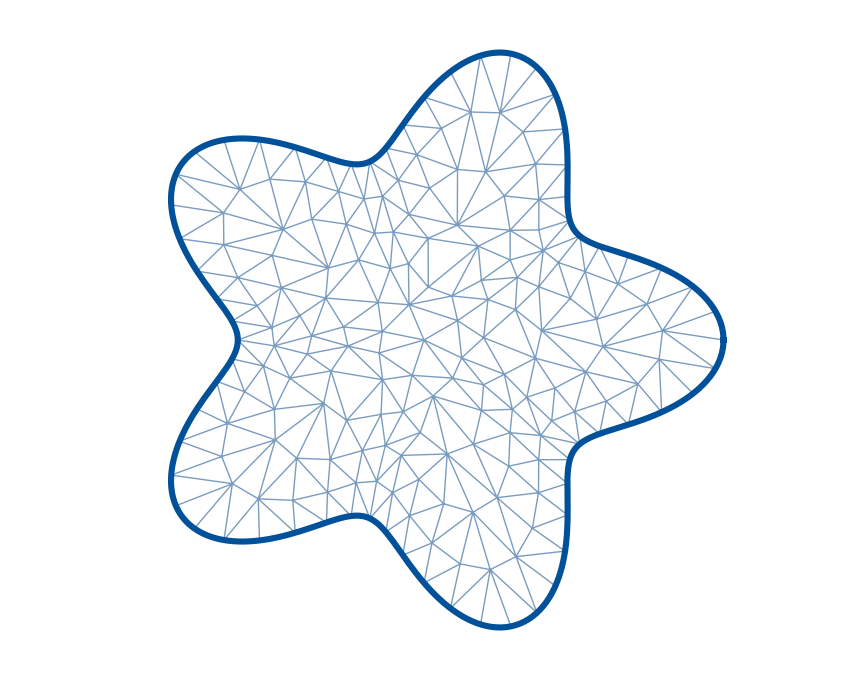
Meshed geometry
The boundary is made of mesh edges: the mesh follows the shape. A new shape means a new mesh.

Level set function φ
A function φ(x) with a sign: φ < 0 inside Ω, φ > 0 outside, φ = 0 on the boundary Γ. A disc of radius R:

Level set on a simple mesh
The mesh is a plain grid that ignores Ω. The boundary cuts through cells, and φ tells us where.
Cut finite element methods · MINES Paris – PSL
3
Two minutes, no hurry: this slide prepares the pipeline on the next one. Left: the way they know from this week. The mesh is built to fit Ω, so the boundary is a list of mesh edges, and a new shape needs a new mesh. Middle: the other way. A level set function φ is just a function of position with a sign: negative inside, positive outside, zero on the boundary. Ask: for a disc, what is φ? Answer: distance to the centre minus the radius. To test whether a point is inside, evaluate φ and look at its sign; no mesh is needed for that. Right: the level set lives on a simple mesh that knows nothing about Ω. The boundary now cuts through cells, and that is where all the new work of the lecture sits. Next slide: the whole finite element pipeline with a fitted mesh and with a level set.
4. Meshing challenges
Meshing challenges

Scans and images
Pores, cracks and phases from CT or microscopy: the geometry is described in pixels.
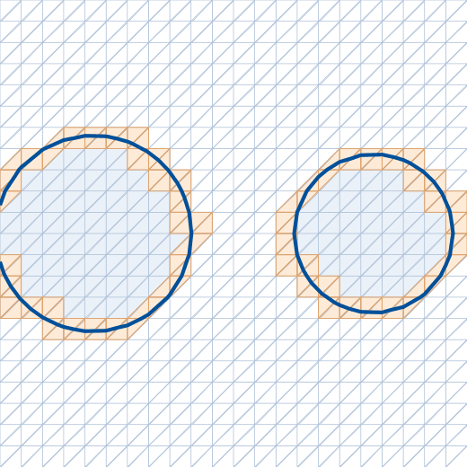
Moving geometry
the shape and topology changes, merges or splits, a fitted mesh has to be rebuilt each time
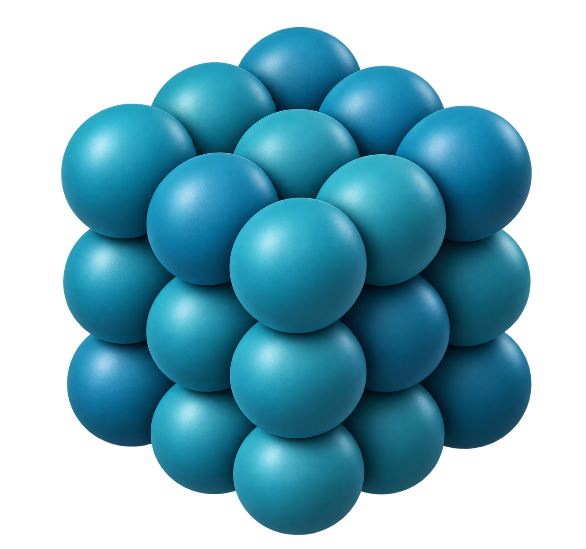
Implicit shapes
Unions, blends and offsets of simple primitives: easy to describe, hard to mesh
Cut finite element methods · MINES Paris – PSL
4
Four minutes. Start from the question, not from the method: what if my geometry is a scan, a shape that moves and changes topology, or a shape produced by an optimiser? Left: an image generated for this lecture, similar to a micro-CT slice of a porous material: light solid matrix, dark pores (synthetic, not a real scan). Middle: an animation made for this lecture (two bubbles merging, described by a level set): the background mesh never changes, only the cut cells in orange follow the boundary. With a fitted mesh the two bubbles would need a remesh at every step, and the merge itself is a change of topology. Right: a cluster of spheres built from implicit primitives, also from that talk. Ask the students how they would mesh the left image with the methods of this week: every pore needs its own boundary, and the mesh must follow it. We will solve in the solid matrix, with the pores empty.
5. Three examples we will build, step by step
Three examples we will build, step by step

1. Poisson on a flower
Every step explained: level set, cut cells, quadrature, Nitsche, small cuts, convergence
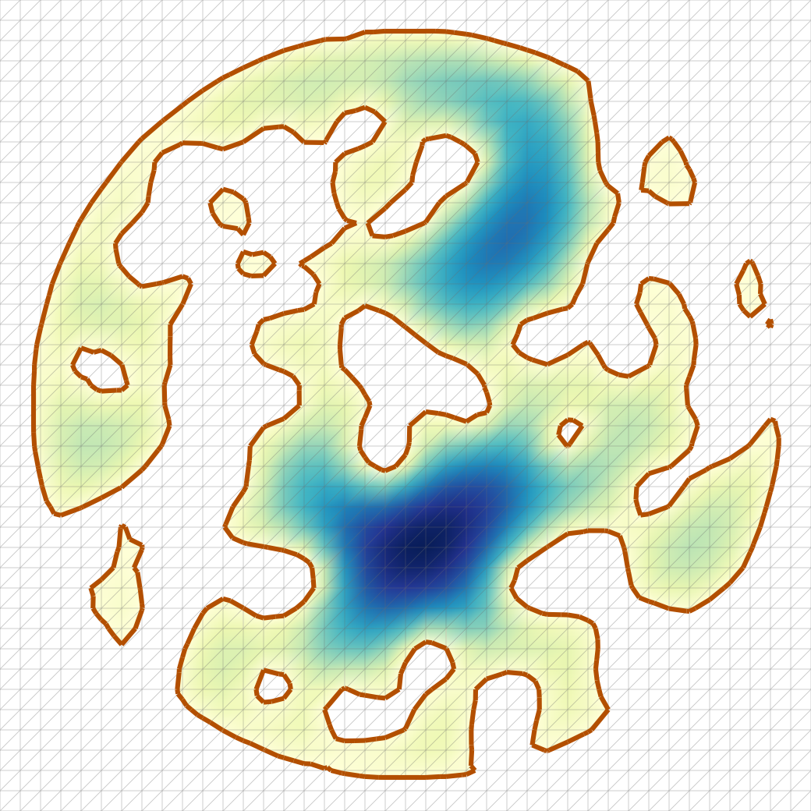
2. A porous specimen
Pixels → signed distance → level set φ, then solve in the matrix, with the pores empty
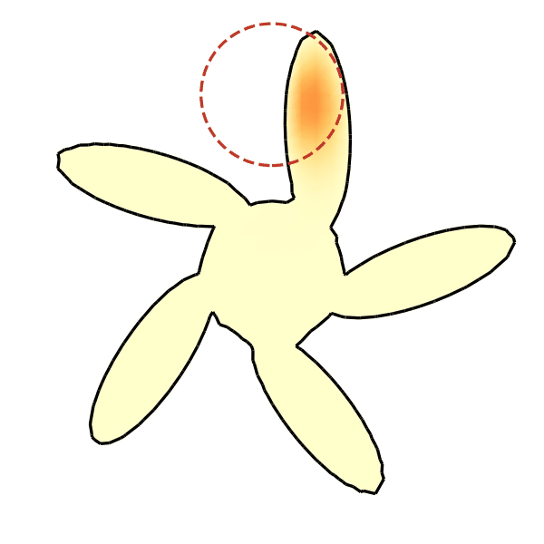
3. A rotor: build, turn, tune
Union of turned blades, turned through a hot-gas jet by changing φ only, then the widest blade that stays below a temperature limit
Cut finite element methods · MINES Paris – PSL
5
Two minutes. The three situations of the previous slides: scans, implicit shapes, moving shapes. We build three examples, all with the Python code of this lecture (minicut: numpy, scipy, matplotlib, nothing to install). Example 1 is the long one: Poisson on a flower, built step by step, where each step is first explained and then written in code: level set, cut and classify, quadrature, Nitsche, small cuts and their repair, solve, convergence. Example 2 repeats the same steps for a porous specimen given as an image: we solve in the solid matrix, the pores are empty (they could also be filled with a second material, which is an interface problem). Example 3 is a five-bladed rotor built from simple level sets with union, turned through a hot-gas jet that is fixed in space by changing the level set only, and finally tuned: find the widest blade whose peak temperature stays below a limit at every angle (a first shape optimisation). The picture of Example 3 is animated on purpose: the rotor turns and the blades heat up one after the other as they pass through the jet, to make clear from the start that this is the moving-boundary example. In all of them the background mesh never changes, the orange line is the boundary, the grey lines are the mesh.
6. Get minicut: install it on Windows
Cut finite element methods · MINES Paris – PSL
9
Get minicut: install it on Windows
In one line: just minicut, nothing else to download
pip install https://github.com/sclaus2/cutfem-lecture/archive/main.zip
After step 1, run it in PowerShell: import minicut then works anywhere. Notebooks: steps 2 to 4.
Install Python 3.9 or newer
From python.org. In the installer tick Add python.exe to PATH.
Download the repository
Open github.com/sclaus2/cutfem-lecture, click Code → Download ZIP, then right-click the file and choose Extract All.
Open PowerShell in that folder
In File Explorer click the address bar of the extracted folder, type powershell, press Enter.
Install and start
Paste the commands on the right. Jupyter opens in your browser.
python -m venv .venv
.venv\Scripts\Activate.ps1
pip install -r requirements.txt
jupyter lab notebooks\cutfem_lecture.ipynb
If something fails
PowerShell refuses to run Activate.ps1: first run Set-ExecutionPolicy -Scope Process Bypass
Keep the folder as it is: the notebook imports minicut.py from the folder above it.
minicut is one file, minicut.py, and needs only numpy, scipy and matplotlib. On macOS or Linux: python3 -m venv .venv, source .venv/bin/activate, then the same pip and jupyter lines.
Two minutes, or skip it in the lecture and point to it. Everything we run in the lecture is minicut: one Python file with numpy, scipy and matplotlib, so it installs on a Windows laptop without a compiler. Steps: install Python from python.org and tick "Add python.exe to PATH"; download the repository as a ZIP from GitHub (Code, Download ZIP) and extract it; open PowerShell in the extracted folder (type powershell in the address bar of File Explorer); create a virtual environment with py -m venv .venv, activate it with .venv\Scripts\Activate.ps1, install numpy, scipy, matplotlib and jupyterlab with pip install -r requirements.txt, and start the notebook with jupyter lab notebooks\cutfem_lecture.ipynb. To only get minicut, one line after installing Python is enough: pip install https://github.com/sclaus2/cutfem-lecture/archive/main.zip (the repository has a pyproject.toml; this installs minicut and its three dependencies, import minicut then works in any folder, and no git is needed). The notebook is not part of that package, so for the notebook use the ZIP steps. If PowerShell blocks the activation script, Set-ExecutionPolicy -Scope Process Bypass allows it for this window only. The notebook finds minicut.py in the folder above it, so keep the folder structure. On macOS or Linux use python3 -m venv .venv and source .venv/bin/activate. Not tested here: Google Colab or other online notebooks.
7. Example 1 · The goal: Poisson on a flower
Example 1 · The goal: Poisson on a flower
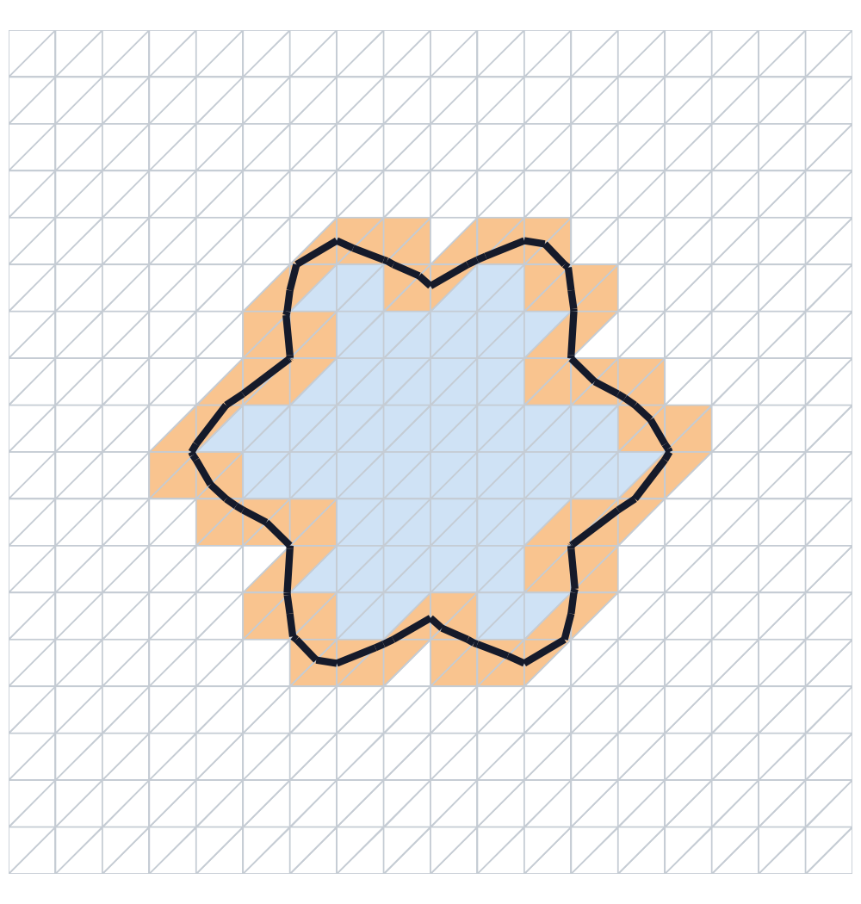
Background mesh of 18 × 18 squares (each split in two triangles); the boundary Γ is the black curve. Blue: inside Ω, orange: cut by Γ, white: inactive.
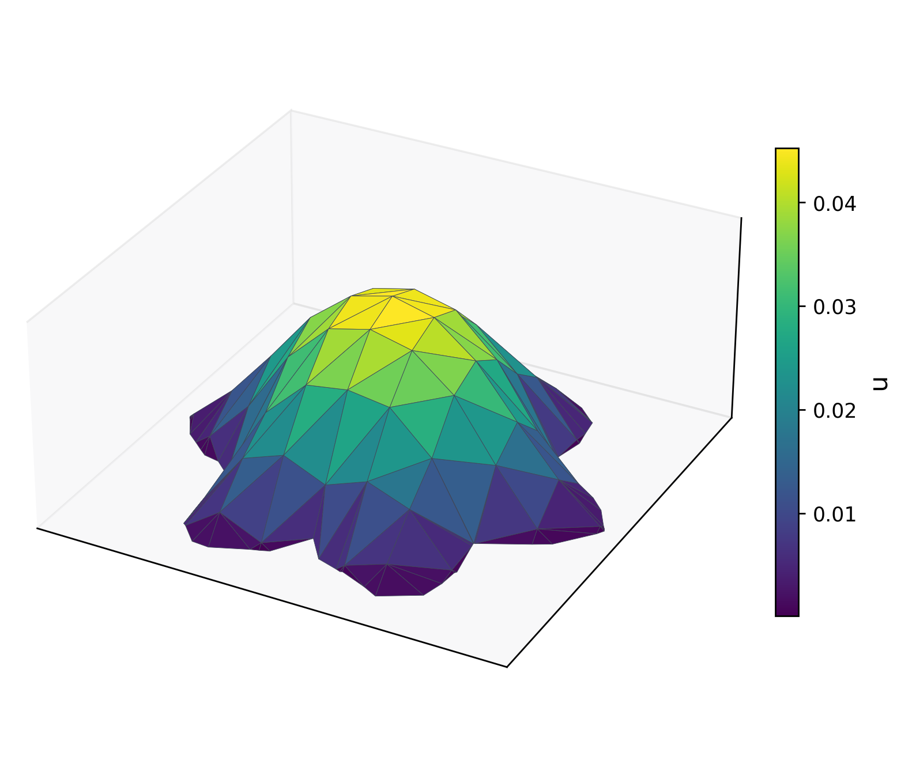
P1 elements, solved on the active cells only.
Cut finite element methods · MINES Paris – PSL
6
Three minutes. Show the result before any theory. The problem is the Poisson problem of the week with a flower-shaped domain: the boundary is not made of mesh edges. The background mesh is a regular grid of 18 by 18 squares, each split into two triangles. Blue cells are inside, orange cells are cut by the boundary, white cells are inactive and never touched. The solution on the right lives on the blue and orange cells and is zero on the flower boundary (imposed weakly, see later). Promise: by the end of this example they will know every step that produced this picture, and each step ends with the lines of code that do it, in minicut, the small Python package of the lecture. Figures made with minicut (tools/lecture_figures.py).
8. CutFEM vs FEM
CutFEM vs FEM
Classical FEM: the mesh fits Ω
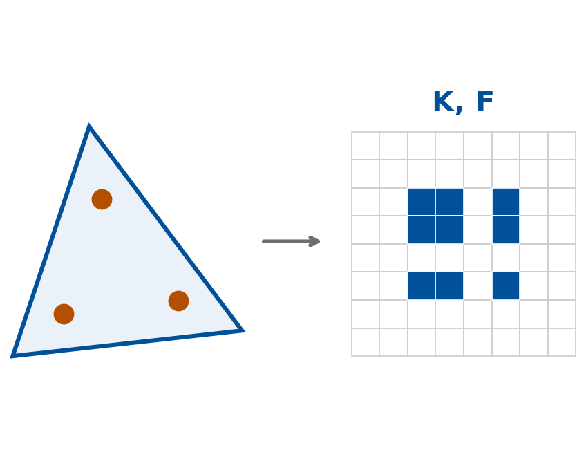
Quadrature rules, assemble K, F
Cut FEM: background mesh + level set function

Background mesh + level set φ
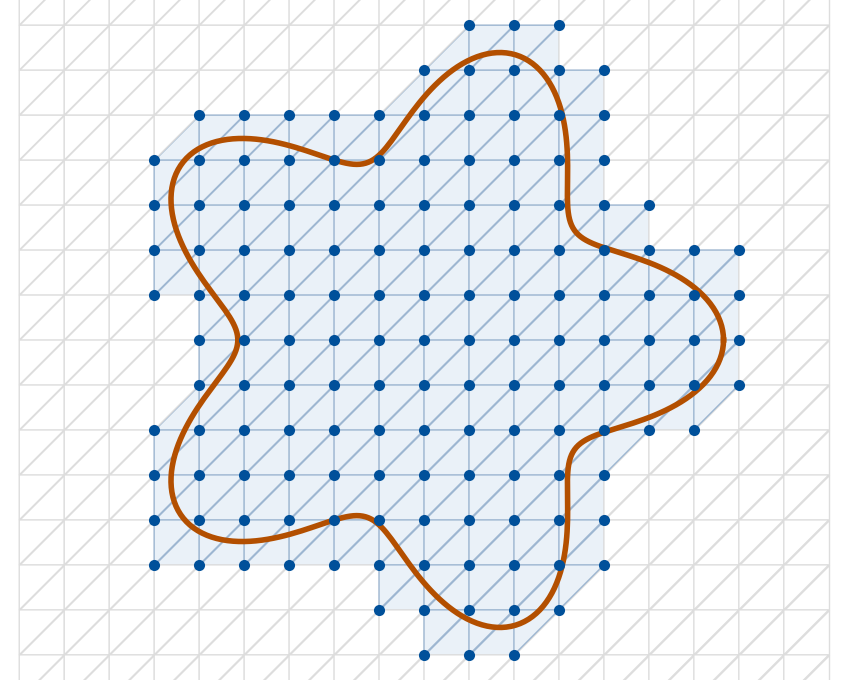
Same elements, active mesh
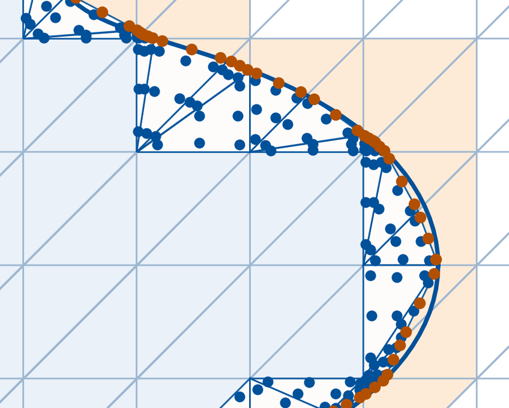
Quadrature on Ω∩T and Γ∩T
The orange steps use the shape of Ω. Cut FEM replaces exactly these three; the linear algebra stays the same.
Cut finite element methods · MINES Paris – PSL
7
Three minutes. Top row: the classical six-step algorithm from the end of lecture 2, one picture per step: a mesh that fits the boundary, the element type, Gauss rules on whole triangles and assembly of K and F, fixing the values at the boundary nodes, the sparse solve, and the reconstruction of u_h. Ask the room: which of these steps use the geometry? Answer: the orange ones, 1, 3 and 4. Bottom row: the same pipeline for a cut FEM. The mesh no longer fits, only a level set tells us where the boundary is. The integrals run over the cut pieces Ω∩T and Γ∩T. The boundary condition is imposed weakly with Nitsche, and the ghost penalty keeps the system stable. Steps 2, 5 and 6 keep their form: the same elements on the active mesh, the same sparse solve, the same reconstruction. We build each orange step in turn.
9. Describing Ω with a level set
Cut finite element methods · MINES Paris – PSL
8
Describing Ω with a level set
- φ(x, y) is any function we can evaluate: a formula, a distance to a boundary (CAD, mesh)
Flower (six petals):
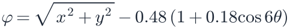
with θ = atan2(y, x)
- On the mesh, φ is a finite element function: we only need its values at the nodes
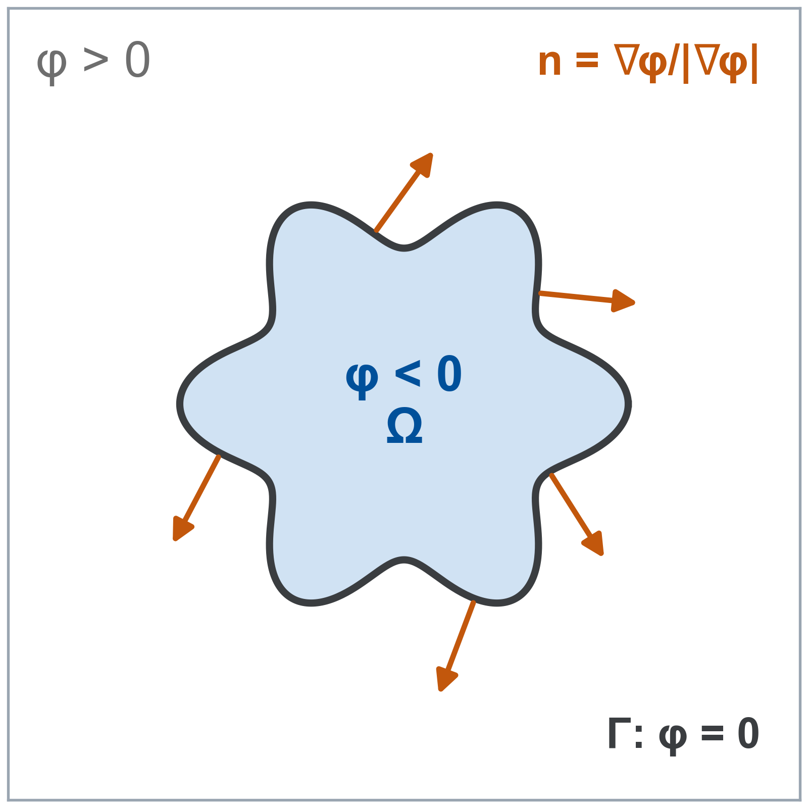
Sign convention: negative inside Ω
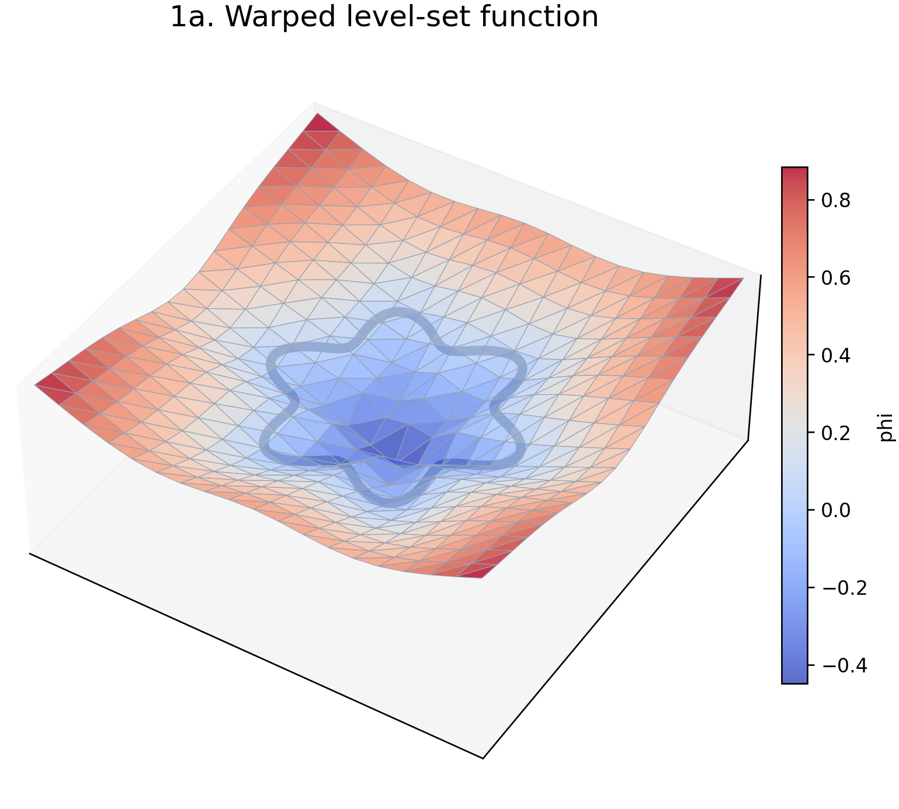
The graph of φ: Γ is where it crosses zero
Three minutes. Sign convention: negative inside. Left: the definition, the normal and the curvature (the divergence of the normal; it matters later for surface tension and for curved boundaries). Middle: the flower of Example 1, with the outward normals. Right: the graph of a level-set function of the flower; the boundary is where the surface crosses zero. The level set is represented on the background mesh as a finite element function, as in the flower of Example 1 (six petals): in polar form the boundary is r(θ) = 0.48 (1 + 0.18 cos 6θ), so φ(x, y) = √(x² + y²) − 0.48 (1 + 0.18 cos(6 atan2(y, x))); the radius oscillates between 0.39 and 0.57. Mention that the signed distance is the common choice but any function with the right zero set works. Link to lecture 1: the boundary is now a zero set, not a list of mesh edges.
10. Minicut: mesh and level set
Minicut: mesh and level set
mesh = mc.Mesh(18, box=(-1, -1, 1, 1))
def level_set(x, y): # flower, 6 petals
r = 0.48 * (1 + 0.18 * np.cos(6 * np.arctan2(y, x)))
return np.sqrt(x**2 + y**2) - r
phi = level_set(mesh.nodes[:, 0], mesh.nodes[:, 1])
# phi: its values at the nodes (a P1 function)

Background mesh and the zero level set Γ
Cut finite element methods · MINES Paris – PSL
10
Two minutes. Step 1 of the flower example, in minicut, the Python code of the notebook: a structured triangle mesh of the box [-1, 1]² (18 × 18 squares, 648 triangles) and a level set. Everything about the geometry is in phi, here the values of a formula at the nodes; it could equally come from an image (Example 2) or from a combination of shapes (Example 3). minicut stores phi as a P1 function, so the zero set is piecewise linear on the mesh.
11. Classifying the cells of the background mesh
Classifying the cells of the background mesh
Inside
φ < 0 at every vertex: an ordinary cell
Cut
φ changes sign: the boundary crosses the cell, special treatment
Outside
φ > 0 at every vertex: ignored
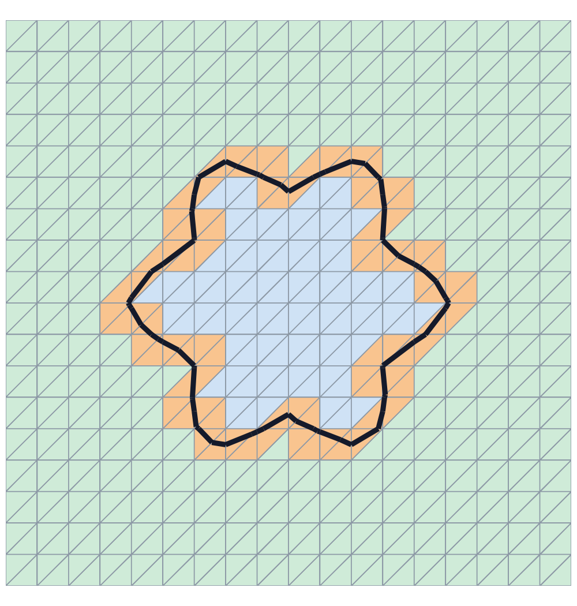
Inside blue · cut orange · outside green
Cut finite element methods · MINES Paris – PSL
11
Three minutes. The classification only needs the sign of φ at the vertices of each cell, so it is one cheap pass over the mesh. A small caveat to mention only if asked: a thin feature of Ω can pass between vertices without changing any sign; the mesh must resolve the geometry at least roughly.
12. The active mesh
The active mesh
- Active mesh = inside cells + cut cells
- Unknowns live on active cells only; outside cells are deactivated (set to zero)
- The cost follows the size of Ω, not the size of the box
Watch this
Vertices of cut cells can lie outside Ω. Their DOFs are active, and they can cause trouble which I will explain in more detail in a few minutes.
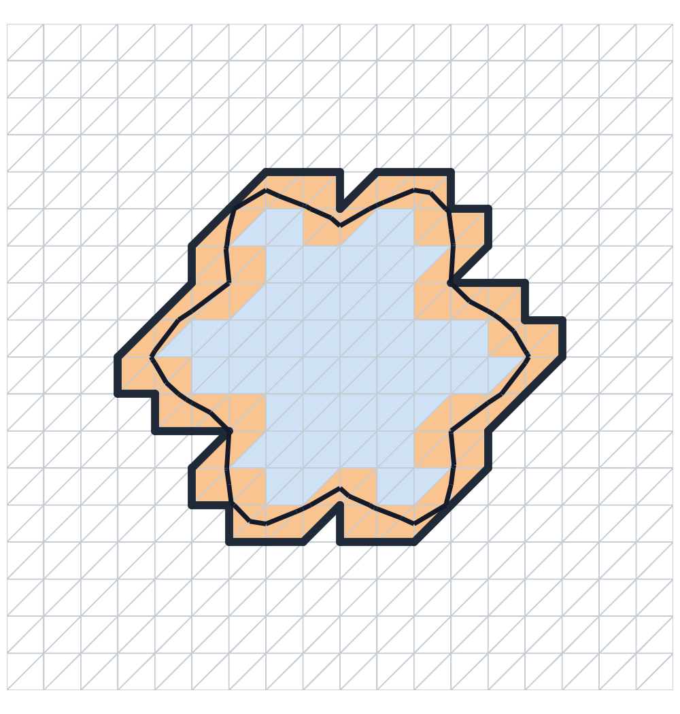
Active mesh = blue + orange (black outline); white cells are inactive, never assembled
Cut finite element methods · MINES Paris – PSL
12
Two minutes. The finite element space is the usual P1 (or P2) space, restricted to the active mesh. Nothing new in the spaces. The warning about DOFs outside Ω is the seed for the conditioning block a few slides further on.
13. Minicut: cut and classify
Minicut: cut and classify
geom = mc.CutGeometry(mesh, phi, order=2)
t = geom.cell_type
inside_cells = np.where(t == mc.INSIDE)[0]
cut_cells = np.where(t == mc.CUT)[0]
active_cells = geom.active_cells
# t: from the signs of phi at the vertices
# INSIDE all < 0
# CUT the signs differ
# OUTSIDE all > 0
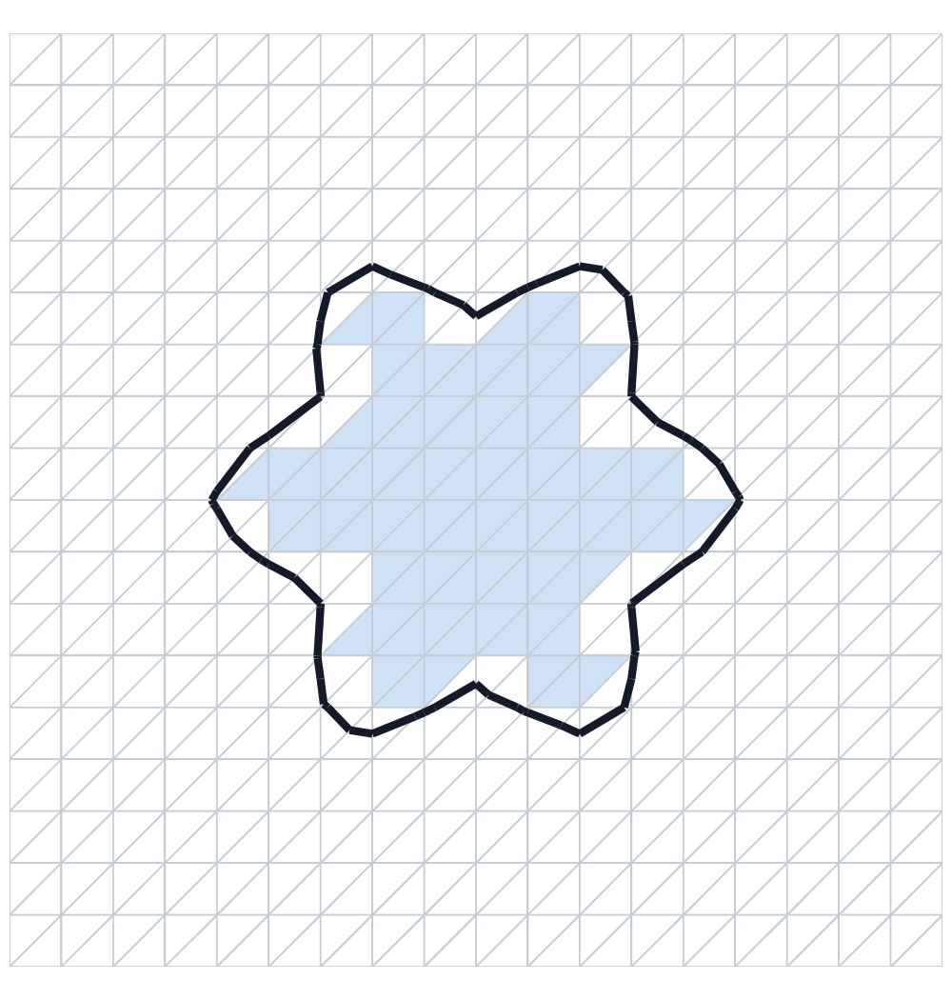
inside_cells (82)
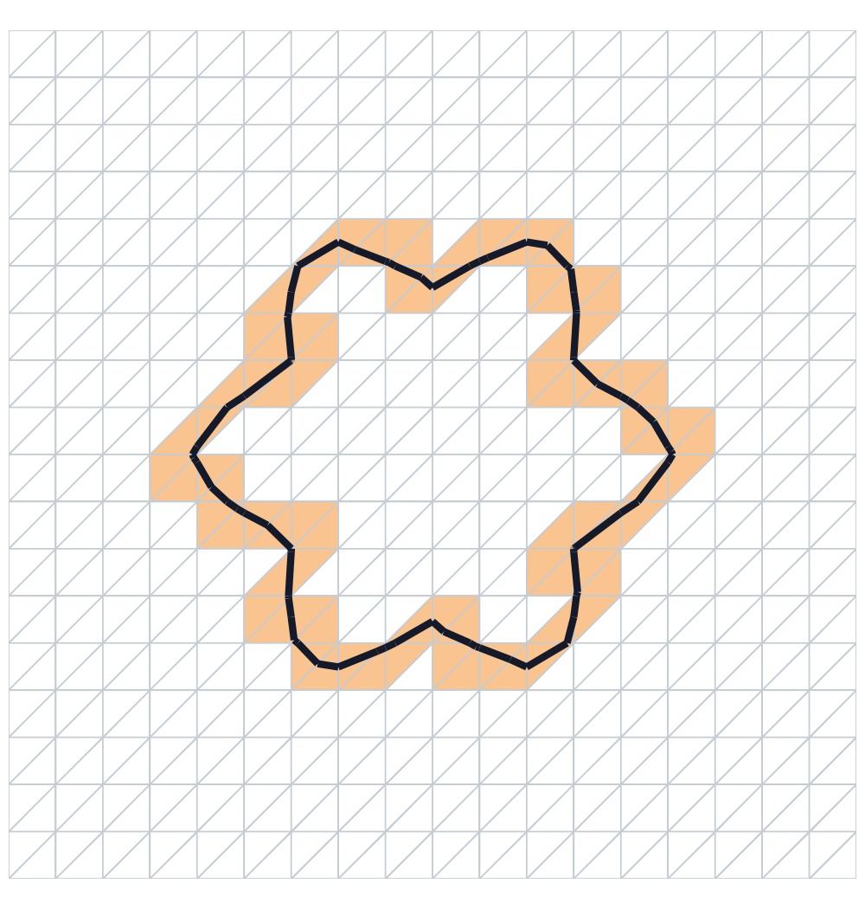
cut_cells (82)
Cut finite element methods · MINES Paris – PSL
14
Two minutes. mc.CutGeometry(mesh, phi) does the whole cut in one call: it classifies every cell from the signs of phi at its vertices, cuts the cut cells into sub-triangles, and builds the quadrature rules of the next step. Its attributes are the cell lists: cell_type is INSIDE, CUT or OUTSIDE for every cell, active_cells is inside and cut together, the active mesh of the earlier slide. Here 82 cells are inside, 82 are cut and 484 are outside.
14. Cutting one cell: from signs to quadrature points
Cutting one cell: from signs to quadrature points
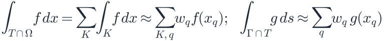
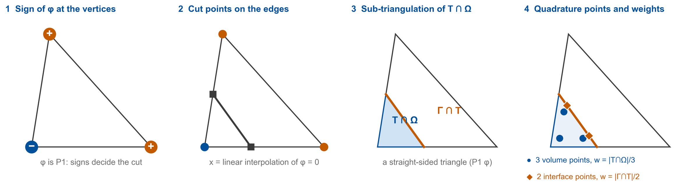
Signs decide
φ is P1 on the cell: a sign change between two vertices means the edge is cut
Cut points
on each cut edge, the zero of the linear interpolant of φ
Sub-triangles
T ∩ Ω is split into triangles; Γ ∩ T is a segment
Gauss on pieces
a standard rule on each piece, mapped to T
Cut finite element methods · MINES Paris – PSL
16
Four minutes. The formula at the top is what the whole slide is for: the integral over the cut cell T ∩ Ω is the sum of the integrals over its sub-triangles K, and on each K a standard Gauss rule with points x_q and weights w_q is used; on the interface piece Γ ∩ T the same idea gives the boundary integral. One triangle, cut by a P1 level set. Only the signs at the three vertices matter: here one vertex is inside and two are outside. The zero of the linear interpolant on the two cut edges gives the two cut points. T intersect Omega is then a single triangle (when two vertices are inside it is a quadrilateral, split into two triangles). Each piece gets a standard Gauss rule, mapped to the cell: three points on this triangle, weight one third of the area each. The interface segment gets its own rule: two Gauss points, weights half the length each. With curved cuts (P2 level set) the pieces are curved and the rules are more involved; the idea is the same. The figure was drawn for this lecture, the rule shown is the simplest one.
15. Quadrature rules on the cut geometry
Quadrature rules on the cut geometry
- Split T ∩ Ω into simplices, using a look-up table on the signs of φ
- Put a Gauss rule on each piece and map the points to T
- The interface Γ ∩ T gets its own points, weights and normal n
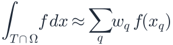
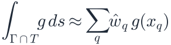

Volume points in Ω

Interface points on Γ
Cut finite element methods · MINES Paris – PSL
17
Five minutes. Key message: once the rules exist, assembly is unchanged. The element routine receives (point, weight) pairs and does not care where they come from, exactly like Gauss points in lecture 2. In minicut the rules are two objects, geom.volume and geom.interface, produced when the mesh is cut; they hold the points, the weights and, on Γ, the normals. Geometry accuracy: with linear cuts the boundary is approximated to O(h squared); higher-order cutting is possible (mention the ray-based and subdivision approaches from the JSO talk if time allows). Interface points carry the normal n = grad(phi)/|grad(phi)|, which the next block uses.
16. Minicut: quadrature rules
Minicut: quadrature rules
vol = geom.volume
intf = geom.interface
# vol: points, weights on T ∩ Ω
# intf: points, weights, normals on Γ ∩ T
vol.points.shape # (606, 2)
intf.points.shape # (246, 2)
# integrals become sums:
# ∫_Ω f dx ≈ Σ_q w_q f(x_q)
np.sum(vol.weights) # |Ω_h| = 0.7316

volume points: the pieces of T ∩ Ω near one petal
interface points
Cut finite element methods · MINES Paris – PSL
19
Two minutes. This is the step that replaces the Gauss rule of lecture 2. The rules were built by the constructor of the previous step: geom.volume holds the points and weights on the pieces T ∩ Ω (a three-point interior triangle rule, exact for degree 2, on every sub-triangle; the dense clusters at the boundary come from the thin sub-triangles of cut cells, see the zoom), geom.interface the Gauss points on the straight segments Γ ∩ T with the outward unit normal. With a P1 level set the cut is exact: the pieces are triangles and Γ is a segment in every cut cell. The sum of the volume weights is the area of the discrete flower, 0.7316, against 0.7355 for the smooth flower: the level set was interpolated on a mesh with h = 0.11, so the geometry error shrinks with the mesh like the rest.
17. Dirichlet conditions on a cut boundary
Cut finite element methods · MINES Paris – PSL
20
Dirichlet conditions on a cut boundary
In FE the nodal values on
are fixed. Now no node lies on
The boundary runs through the cells and boundary conditions have to be enforced using integrals.
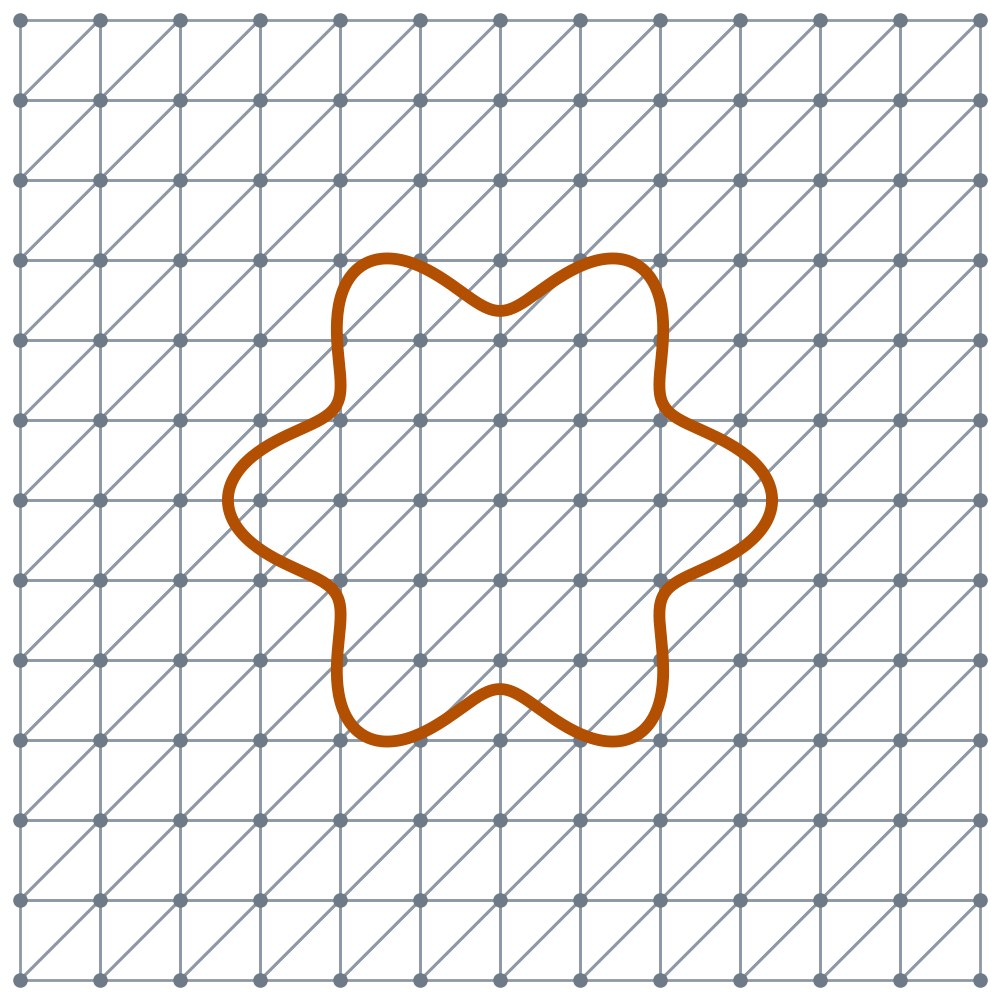
Γ runs through the cells
Lagrange multipliers
Enforce u = g on Γ with extra unknowns
Saddle-point system; the spaces must be compatible
Nitsche’s method
Impose u = g weakly, inside the bilinear form
No extra unknowns, symmetric, consistent
Three minutes. Link to lecture 2 (Dirichlet conditions: assemble all nodes, fix UD, solve for Uf, a discrete lifting). With a cut boundary there is nothing to fix. The picture shows the unfitted boundary: the flower runs through the cells of a background mesh and no node lies on it. (The classical workaround, snapping the boundary to the nearest nodes, moves it by up to h and gives a first-order geometry error.) Two options remain. Lagrange multipliers work but add unknowns and a compatibility condition. Nitsche keeps the system symmetric positive definite with the same unknowns, which is why it is the standard choice in cut methods. Neumann conditions are unchanged: they are natural in the weak form and only need the interface quadrature.
18. Lagrange multipliers: the derivation
Lagrange multipliers: the derivation
1 Constrained minimisation
Minimise the energy among functions with u = g on Γ. The multiplier λ is a new function on Γ.
2 Stationary point
Vary u: the weak form with an extra boundary term. Vary λ: the constraint, weakly.
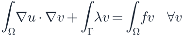
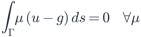
3 What is λ?
Integrating by parts shows λ = −∂u/∂n on Γ: the flux through the boundary, often what we want to know.
Cut finite element methods · MINES Paris – PSL
21
Four minutes. First of the two classical alternatives to Nitsche. Minimise the energy with the constraint u = g on Gamma, and add a Lagrange multiplier lambda that lives on Gamma only. Taking the variation in u gives the usual weak form plus the term integral of lambda times v over Gamma; taking it in lambda gives the constraint in weak form. Integrating by parts shows that lambda is minus the normal derivative: the flux. This is physically meaningful, for instance the heat flux through the wall. The price is paid in the next slide. Sign convention: the Lagrangian here is energy minus work plus lambda times (u minus g).
19. Lagrange multipliers: discrete weak form and cost
Lagrange multipliers: discrete weak form and cost
Discrete weak form
Find (uₕ, λₕ) in Vₕ × Λₕ such that, for all (vₕ, μₕ) in Vₕ × Λₕ:
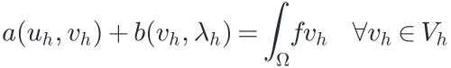
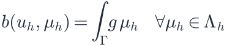
with the two bilinear forms
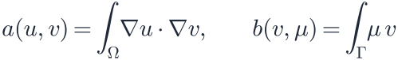
Matrix form
Choosing Λₕ
Λₕ lives on Γ only: piecewise polynomials on the cut boundary, for instance the traces of Vₕ functions on Γ.
Saddle-point system
Extra unknowns λ, a zero diagonal block, an indefinite matrix: not a plain CG problem.
Compatibility
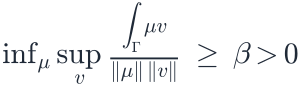
Λₕ must be compatible with Vₕ in this inf-sup sense. On a cut mesh, small cuts can break it: stabilisation is needed here too (e.g. Barbosa–Hughes).
Cut finite element methods · MINES Paris – PSL
22
Four minutes. The discrete version of the weak form of the previous slide. Choose a finite element space V_h on the background mesh and a multiplier space Lambda_h on the boundary Gamma only; find the pair (u_h, lambda_h) such that the first equation, the stiffness form a plus the coupling form b(v, lambda), equals the load, and the second equation, b(u, mu) = integral of g mu over Gamma, imposes the boundary condition weakly, for all test pairs. The two bilinear forms are the stiffness integral over Omega and the integral over Gamma of mu times v. In matrix form this is a block system with the stiffness matrix A, the coupling matrix B and a zero block: symmetric but indefinite. The spaces cannot be chosen independently: they must satisfy the inf-sup (LBB) condition with a constant beta independent of the mesh, otherwise the system is singular or the multiplier oscillates. On a cut mesh the cut cells have arbitrary shapes, so keeping the compatibility is delicate and in practice needs additional stabilisation. This is why Nitsche's method, which has no extra unknowns, became the default in cut methods. Theory only: no numerical experiment with multipliers is shown.
20. Nitsche’s method, derived from the weak form
Nitsche’s method, derived from the weak form
Weak form of lecture 1, now with v ≠ 0 on Γ: the boundary term stays
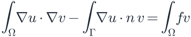
Symmetry: add a term that is zero for the exact solution, since u = g on Γ
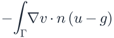
Penalty: control u − g on Γ, with γ a constant and h the cell size
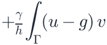
Consistent: the exact solution satisfies every added term. Symmetric.
Cut finite element methods · MINES Paris – PSL
23
Six minutes, the one derivation of the lecture. Walk step by step from the weak form they saw in lecture 1: there we chose v = 0 on the Dirichlet boundary so the boundary integral vanished; now the test functions do not vanish on Γ, so the integral stays and we get a term with the flux. Step 2: the extra term is zero for the exact solution (consistency), and it makes the form symmetric. Step 3: without a penalty the form is not coercive. The penalty needs gamma large enough; how large depends on small cut cells, which is the next block. n is the outward unit normal; for Poisson, minus Laplacian u = f in Omega, u = g on Gamma.
21. Minicut: the variational form
Minicut: the variational form
f = lambda x, y: np.ones_like(x) # f = 1
g = lambda x, y: np.zeros_like(x) # g = 0
A = mc.stiffness(geom) # ∫Ω ∇u·∇v dx
An, bn = mc.nitsche(geom, g, gamma=40.0) # Nitsche on Γ
A = A + An
b = mc.load(geom, f) + bn # ∫Ω f v dx and Nitsche

interface points and normals n on Γ ∩ T
Cut finite element methods · MINES Paris – PSL
26
Three minutes. The weak form has two parts so far and each is one function of minicut. mc.stiffness integrates the gradient term over Ω with the volume rule; mc.nitsche integrates the Nitsche terms over Γ with the interface rule and returns the matrix and its right-hand side contribution (the g terms); the arrows are the normals n of the interface rule that the Nitsche terms use. The right-hand side f = 1 is integrated by mc.load. Inside, each function evaluates the integrals at the quadrature points and scatters the local matrices: short functions in minicut.py, which the students can read in the notebook, where the Nitsche terms are also written out and checked against mc.nitsche. Nitsche's penalty is gamma / h with gamma = 40. Question for the room: is this matrix safe? The next step shows when it is not.
22. Next: assemble over all active cells
Next: assemble over all active cells
We now assemble the matrix over every active cell: the inside cells and all the cut cells.
- Inside cells: the usual integral over the whole cell T
- Cut cells: integrals over T ∩ Ω and Γ ∩ T, with the quadrature rules of the pieces
- The cut cells are the new part: what happens to their entries when the cut is small?
Active cells = blue (inside) + orange (cut); white cells are never assembled
Cut finite element methods · MINES Paris – PSL
22
Two minutes. This is the transition from the variational form to stabilisation. The matrix of the previous slides (stiffness plus the Nitsche terms) is assembled cell by cell over the active mesh: inside cells with the usual integral over the whole cell, cut cells with integrals over T intersect Omega (the volume part, using the quadrature rules on the pieces) and over Gamma intersect T (the Nitsche terms). Hat functions are called psi_i here, because phi is the level set. For an inside cell nothing is new. For a cut cell the integration domain depends on where the boundary falls, and so does the size of the entries. The next slide shows what happens when the cut is small.
23. A small cut gives small matrix entries
A small cut gives small matrix entries
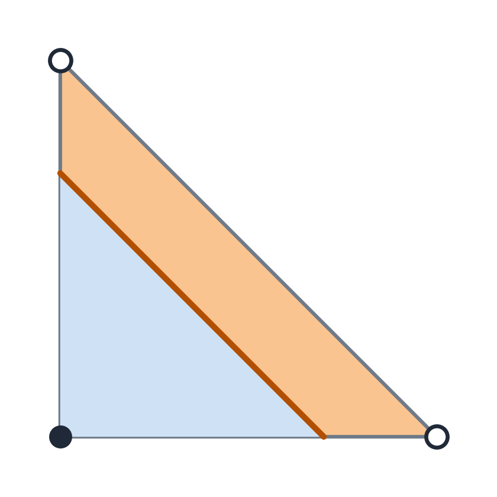
A good cut
η = |T ∩ Ω| / |T| = 0.49: the entries are about half of the full ones
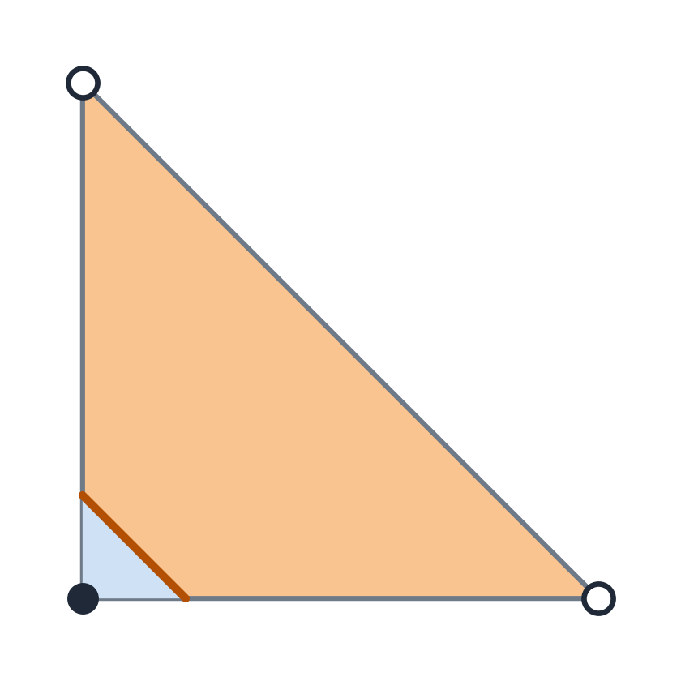
A small cut
η = 0.04: the entries are 25 times smaller
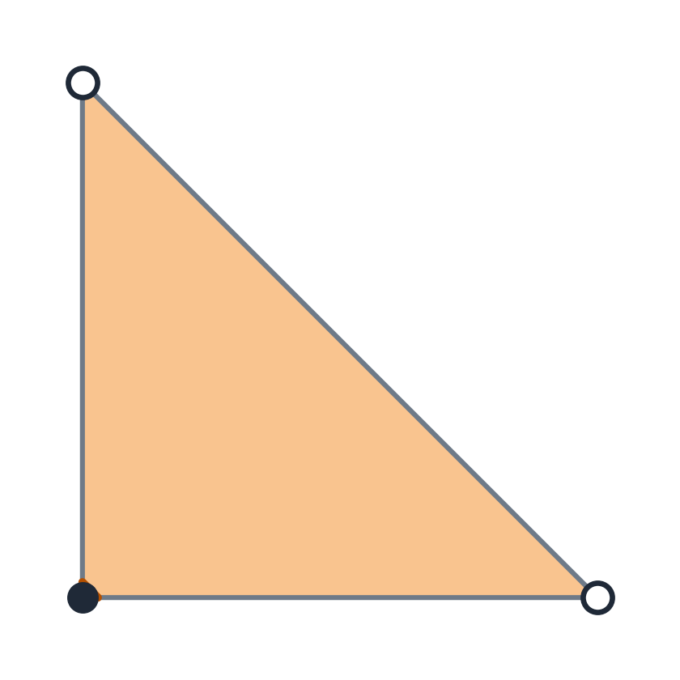
A bad cut
η = 0.001: 1000 times smaller; the two vertices outside see Ω only through a sliver
For P1 the gradients are constant on T, so the entries on the cut cell are the full ones times η:
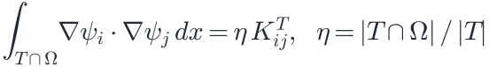
● vertex inside Ω, ○ vertex outside Ω. Blue: T ∩ Ω. Orange: the rest of the cut cell T. The boundary Γ is the dark orange line.
Tiny entries make the matrix nearly singular. How bad is that? The condition number measures it.
Cut finite element methods · MINES Paris – PSL
23
Two minutes. One triangle of the background mesh, cut by a straight boundary (a P1 level set) at three positions. Define eta = |T intersect Omega| / |T|, the fraction of the cell that lies in Omega. Left: eta = 0.49, the integral over T intersect Omega is about half of the integral over the whole cell. Middle: eta = 0.04, Omega is only a corner of the cell. Right: eta = 0.001, the part inside Omega is a sliver that you can hardly see: the filled vertex is inside, the two open vertices are outside Omega but are still unknowns of the active mesh, and they see Omega only through the sliver. The formula is exact for P1: the gradients of the hat functions are constant on a triangle, so the matrix entries over T intersect Omega are eta times the entries over the whole cell T. A DOF whose cells are all cut like this has a whole row of tiny entries, so the matrix is nearly singular. The boundary falls where the geometry puts it, nothing in the mesh prevents it, and a moving boundary goes through all these cases. How bad it is, is measured by the condition number, next slide.
24. What is the condition number?
What is the condition number?
The condition number of the matrix A is the ratio of its extreme eigenvalues, in absolute value:
A large κ means
- Iterative solvers (CG, GMRES) need many iterations: about √κ for CG
- Round-off errors grow: about log₁₀ κ of the 16 digits of double precision are lost
- At κ ≈ 10¹⁶ the matrix is numerically singular and the solution is lost
On a fitted mesh of size h, it grows like
Fitted mesh
The constant C depends on the quality of the mesh, which the mesh generator controls.
Cut mesh
The cut cells can have any shape. Does C now depend on where the boundary falls? A small cut gives tiny entries (previous slide).
Next: an experiment
Slide a disc across a fixed mesh and watch κ, the accuracy and the solver cost.
Cut finite element methods · MINES Paris – PSL
27
Three minutes. The previous slide ended with tiny matrix entries on small cuts: the condition number measures how bad that is. Recall from lecture 3 that conditioning controls two things: how many iterations a Krylov solver needs and how many digits survive round-off. For a quasi-uniform mesh the condition number of the stiffness matrix grows like h to the minus two, with a constant that depends only on mesh quality. The question of this block is whether a cut mesh keeps this property. The cut cells are not chosen by a mesh generator: where the boundary falls decides their shape. In this lecture kappa is computed as the ratio of the largest to the smallest singular value (numpy cond), which equals the ratio of eigenvalue magnitudes for a symmetric matrix.
25. The numerical experiment
The numerical experiment
- Poisson problem on a disc Ω with a known solution, so the error can be measured
- P1 elements on a 20 × 20 triangle mesh of [−1, 1]²; the disc centre (0.037, −0.021) is off the grid, so cuts never line up with the mesh
- Nitsche with γ = 40, with and without a stabilisation term (named in the next block)
- Sweep: 81 radii from r = 0.50 to 0.60, one cell width in total. For each radius: assemble, compute the eigenvalues, κ, the error and the GMRES iterations
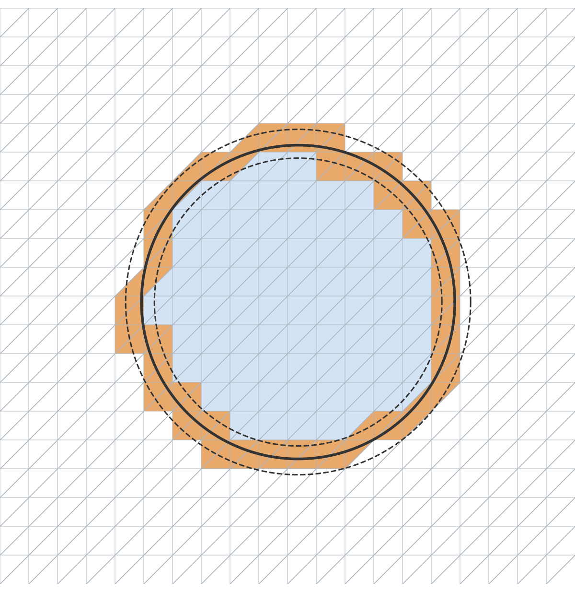
Blue: cells inside Ω. Orange: cut cells. Active mesh = blue + orange.
Cut finite element methods · MINES Paris – PSL
29
Two minutes. Set up the experiment before showing the results. The problem is the Poisson problem from the Nitsche slides: minus Laplacian u = f in Omega, u = g on Gamma, with u exact = sin(pi x) sin(pi y), f = 2 pi squared u exact and g the trace of the exact solution, so the L2 error is computable. Omega is a disc inside the box [-1,1]^2, meshed with 20 by 20 squares each split into two triangles, so h = 0.1 (the box is a few cells larger than the disc on every side; outside cells are never assembled). The centre is slightly off the grid so that the cut pattern is generic. The solid circle is the boundary at r = 0.545, the dashed circles are r = 0.50 and r = 0.60, the two ends of the sweep: the boundary moves by exactly one cell width. For each of the 81 radii we assemble the Nitsche system, with and without a stabilisation term (its name comes in the next block), and compute the eigenvalues of the dense matrix on the active DOFs, the condition number, the L2 error, and the number of GMRES iterations. Figure and data are computed with minicut (tools/cond_sweep.py in the repository); the same sweep is section 7 of the notebook.
26. Slide the boundary by one cell width
Slide the boundary by one cell width
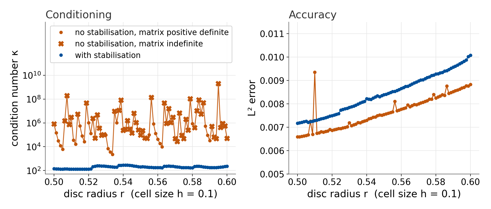
P1 on a 20×20 mesh of [−1,1]², disc of radius r, manufactured solution, Nitsche γ = 40, stabilisation strength 0.1. Crosses: matrix not positive definite.
No stabilisation
κ from 2·10³ to 2·10⁹. Matrix indefinite for 55 of 81 positions. L² error between 6.6·10⁻³ and 9.4·10⁻³.
Indefinite: some eigenvalues are negative (the Poisson matrix should have only positive ones). κ uses |λ|, so it does not see the sign.
With stabilisation
κ between 1.3·10² and 2.9·10². Error between 7.2·10⁻³ and 1.0·10⁻².
Same mesh, same equation: only the boundary moved, by one cell width. The error hardly notices; the matrix does.
Cut finite element methods · MINES Paris – PSL
30
Three minutes. This is the experiment. One fixed 20 by 20 mesh, h = 0.1, and a disc whose radius changes from 0.50 to 0.60, so the boundary moves by one cell width in 81 steps. For each position we assemble the Nitsche system with and without the stabilisation. Left: the condition number. Without stabilisation it jumps over almost six orders of magnitude, from about 2e3 to 2e9, with no pattern in r. With the stabilisation it stays between 130 and 290. Crosses mark the 55 positions where the matrix has negative eigenvalues: it is indefinite, meaning it has positive and negative eigenvalues, whereas the Poisson matrix of a good discretisation is symmetric positive definite (all eigenvalues positive). The condition number is the ratio of the largest to the smallest eigenvalue in absolute value, so it does not see the sign: indefiniteness and the size of kappa are two different questions. Why does it happen? The Nitsche terms minus the integral over Gamma of (d_n u v + u d_n v) are not sign definite; the penalty gamma/h has to dominate them, which needs the boundary term of the gradient to be controlled by the energy on T intersect Omega. On a sliver the energy scales with eta but the boundary part does not, so the penalty is not large enough and a negative eigenvalue appears. A stabilisation restores this control (next block). Right: the L2 error. It is between 6.6e-3 and 9.4e-3 without stabilisation and between 7.2e-3 and 1.0e-2 with it: the accuracy hardly changes, the error is controlled by the mesh and not by the bad cuts (correlation of log kappa with log error: 0.25). Ask the students: so why do we care? The next slides show the mechanism, and the cost: the solver. Say honestly that for a direct solve on this size the damage stays invisible in the error; for iterative solvers, for larger problems, for eigenvalue problems or when the matrix is indefinite, it does not. Data computed with minicut (dense eigenvalue computation on the active DOFs).
27. The condition number grows like 1/η
The condition number grows like 1/η
- A DOF that sees Ω only through a sliver has matrix entries proportional to η (the bad cut)
- The smallest eigenvalue tends to 0 with η, so κ(A) grows roughly like 1/η
- A bad κ then means slow or failing solvers and lost digits; with Nitsche the matrix can even become indefinite (crosses)
Example from the sweep
η = 1.3·10⁻⁸ gave κ(A) = 2.0·10⁹

81 positions of a disc on a fixed mesh, no stabilisation (minicut). η = smallest |T ∩ Ω| / |T| over the cut cells.
Cut finite element methods · MINES Paris – PSL
28

Three minutes. Notation: psi_i are the hat functions (called phi_i in lecture 2; renamed here because phi is the level set). The element matrix on T intersect Omega is eta times the full one (shown two slides back), so any DOF whose support meets Omega only in slivers has a tiny diagonal entry; here we turn this into a statement on the condition number. The scatter plot comes from the sweep of the previous slide, and the sliver is the bad cut of the slide "A small cut gives small matrix entries": each point is one position of the disc, the horizontal axis is the smallest cut fraction eta over the cut cells, the vertical axis the condition number. The dashed line has slope minus one: the trend is roughly 1/eta, with scatter of one to two orders of magnitude, so say roughly and not exactly. Crosses mark matrices that have negative eigenvalues: for Nitsche without stabilisation, tiny slivers do not only hurt the conditioning, they make the matrix indefinite. Connect to lecture 3: conditioning drives iteration counts and round-off.
28. What goes wrong: a DOF nobody controls
What goes wrong: a DOF nobody controls
Mode of the smallest eigenvalue at the worst position of the sweep (r = 0.595). Without stabilisation it lives on one DOF that the sliver cell barely controls, and the eigenvalue is negative: the Nitsche matrix is no longer positive definite. With stabilisation the mode is smooth and the eigenvalue is +0.15.
Cut finite element methods · MINES Paris – PSL
31
Three minutes. We take the worst case of the sweep, r = 0.595, and look at the eigenvector that belongs to the smallest eigenvalue. Each dot is a degree of freedom on the active mesh and its colour is the amplitude of the mode. Without stabilisation the mode is a single spike on a DOF at the bottom of the mesh, at (-0.2, -0.7), a vertex outside the disc whose cells contain only a tiny piece of it (volume fractions 1e-8 and 4e-8). The energy of that mode is almost zero, and because the Nitsche boundary terms are not sign definite the eigenvalue is slightly negative: minus 1.4e-8. So the matrix is not even positive definite and the condition number blows up to 2e9. With the stabilisation the same eigenvector is a smooth, global function and the eigenvalue is +0.15, a normal size. Link back to the active-mesh slide: the DOFs outside the domain were the warning. (mc.smallest_mode in minicut computes this.)
29. Can a larger penalty fix it? (hidden in the deck)
Can a larger penalty fix it?
Same 81 disc positions as before, P1 on a 20×20 mesh. Dashed line: γ = 40, the value used so far. Stabilisation strength 0.1.
Without stabilisation
Indefinite for 55 of 81 positions at γ = 40, still 6 at γ = 1000. Only γ = 10⁴ removes them, but κ stays huge for every γ.
A large γ has a price
The error grows (median 7.6·10⁻³ at γ = 40, 1.3·10⁻² at γ = 10⁴) and κ with stabilisation grows like γ.
Nitsche needs γ large enough, and on a sliver "large enough" has no bound. With stabilisation a moderate γ works for every position: no indefinite matrix for γ ≥ 10.
Cut finite element methods · MINES Paris – PSL
29
Three minutes. The question from the previous slides: the indefiniteness depends on the Nitsche penalty gamma, so can we simply take gamma larger? Nitsche's method is coercive only if gamma/h dominates the consistency terms, which are controlled by an inverse trace inequality on the cut cells. On a well-cut cell the constant is moderate, which is why gamma = 10 to 40 is usually enough on a fitted mesh. On a sliver the energy over T intersect Omega scales with eta while the boundary part does not, so the constant is not bounded and no fixed gamma is safe for every position of the boundary. Numbers, same 81 positions as the sweep: without stabilisation the number of indefinite matrices is 81 at gamma = 5 and 10, 74 at 20, 55 at 40, 30 at 100, 13 at 300, 6 at 1000, 2 at 3000 and 0 only at 10000. The condition number does not improve: its median stays between 4e4 and 7e5 for every gamma, and the range reaches 2e12. A large gamma has a price: the median L2 error goes from 7.6e-3 at gamma = 40 to 1.3e-2 at gamma = 10000, and with the stabilisation kappa grows linearly with gamma (130 at gamma = 10, 3.8e4 at 10000): the boundary condition is enforced more and more strongly, which is the penalty method and not Nitsche's. With stabilisation, indefinite matrices appear only at gamma = 5 (9 of 81) and none for gamma from 10 to 10000, kappa is smallest around gamma = 10 to 20. So the stabilisation is what makes the choice of gamma harmless. Computed with minicut (tools/gamma_sweep.py). The accuracy statement is for this manufactured solution and mesh only.
30. Two ways to control the sliver
Two ways to control the sliver
The vertex outside Ω sees the domain only through a sliver. Left: its value is almost free. Middle: ghost penalty ties it to the neighbour. Right: aggregation removes it.
Cut finite element methods · MINES Paris – PSL
32
Two minutes. A picture in one dimension before the formulas. The shaded region is Omega and the thin orange strip is the sliver of the last cell that lies inside. The P1 function on that cell is determined by two values: the one inside Omega and the one at the vertex outside. The orange fans show that, without stabilisation, almost any value at the outside vertex fits the data because the sliver barely sees it. That is the free direction behind the tiny eigenvalue. Ghost penalty adds a term that ties the outside value to the neighbouring cell, so the function continues smoothly. Aggregation does something different: the outside vertex is not an unknown any more, the cell uses the polynomial of its neighbour. Both give the sliver control from a well-cut cell.
31. Ghost penalty: control from the neighbours
Ghost penalty: control from the neighbours
- Sum over the facets F of cut cells (red); [·] is the jump across F
- It ties the values on a sliver cell to the neighbouring cell, so control extends to the whole cell
- Consistent: the jump vanishes for a smooth solution, so the accuracy is kept
- γg is a dimensionless constant, independent of how the cut falls

Cut finite element methods · MINES Paris – PSL
33
Three minutes. Intuition first (one-dimensional picture on the previous slide): a P1 function on a sliver is determined by its values at three vertices, but we only see a sliver of it. The ghost penalty forces the polynomial on the sliver cell to be close to the polynomial of its neighbour across each facet, so the sliver inherits control from a cell that is well inside. It also restores the coercivity of the Nitsche form independently of the cut position, which is why gamma can be chosen once. For P1 only the jump of the normal derivative is penalised; for higher degree, higher derivative jumps are needed. In minicut: mc.ghost_penalty(geom, gamma_g=0.1), one term on the facets geom.ghost_facets. Original reference: Burman 2010.
32. Cell aggregation: remove the unstable DOFs
Cell aggregation: remove the unstable DOFs
- Flag the ill-posed cut cells: the fraction |T ∩ Ω| / |T| is below a threshold (0.25 here)
- Attach each one to a well-cut root cell nearby: they form an aggregate
- On an aggregate the function is the polynomial of the root cell, so the DOFs of the sliver cells disappear
- Nothing is added to the form, and the system has fewer unknowns
Ghost penalty or aggregation?
Ghost penalty adds a term and keeps all DOFs. Aggregation changes the space and removes DOFs. Both restore a well-conditioned system: over the sweep κ stays between 1.2·10² and 2.2·10², and the matrix stays positive definite.
Badia, Verdugo, Martín, 2018

Orange: ill-posed cells, blue: root cells, thick outline: aggregate. 12×12 mesh, disc of radius 0.6: 18 ill-posed cells among 48 cut cells, 7 dofs removed.
Cut finite element methods · MINES Paris – PSL
34
Three minutes. Aggregation is the second repair. We detect the cut cells whose domain fraction is below a threshold, here 0.25, and attach each of them to a well-cut root cell nearby, through the facets of the active mesh; the group is an aggregate. On an aggregate the finite element function is the polynomial of the root cell, extended over the whole aggregate, so the DOFs on the sliver cells are no longer independent unknowns: a dof that touches no well-cut cell is removed and its value is the root polynomial evaluated at it. In matrix form u = E u_good, where E has one column per remaining dof, and the reduced system is E^T A E u_good = E^T b. Nothing is added to the weak form, the matrix is smaller, and the sliver is controlled by construction. In minicut: mc.aggregate(geom, threshold) and mc.solve_aggregated. The figure is made on a coarse 12 by 12 mesh so the cells are visible: orange cells are ill-posed (18 of 48 cut cells), blue are their root cells, thick lines outline the aggregates; 7 dofs are removed. On the 20 by 20 sweep 8 to 15 dofs are removed and kappa is between 121 and 220. Reference: Badia, Verdugo, Martin, Computer Methods in Applied Mechanics and Engineering, 2018.
33. Aggregation: how it is built
Aggregation: how it is built
- Flag the ill-posed cut cells: |T ∩ Ω| / |T| < 0.25 (hatched)
- Root cells: breadth-first search over the facets of the active mesh, starting from the well-cut cells. Each ill-posed cell gets a root (arrows)
- Good DOFs are the vertices of well-cut cells. Removed DOFs touch none (7 and 28)
- A removed DOF takes the root of its nearest ill-posed cell and the value of the root polynomial there, with λ the barycentric coordinates in the root cell:
agg = mc.aggregate(geom, 0.25)
agg.ill_cells, agg.root # step 1, 2
agg.removed_dofs # step 3
agg.E # step 4: extension matrix
5×5 mesh, disc of radius 0.48: 4 ill-posed cells (η = 0.20), 14 active DOFs, 2 removed, 12 good.
Cut finite element methods · MINES Paris – PSL
35
Four minutes. This slide opens the box of mc.aggregate. We take a tiny example, a 5 by 5 mesh and a disc of radius 0.48, so that every cell and every dof can be read. Step 1: the fraction eta = |T intersect Omega| / |T| is computed from the quadrature of each cut cell; four cells are below 0.25 (here all four have eta = 0.20), they are hatched. Step 2: build the graph whose nodes are the active cells and whose edges are the facets shared by two active cells, and run a breadth-first search from all the well-cut cells at once. Each ill-posed cell is reached from its closest well-cut cell, which becomes its root; the distance is the number of facets crossed (one here). The arrows go from the ill-posed cell to its root. Step 3: a dof is kept if it is a vertex of at least one well-cut cell. The dofs 7 and 28 only touch the sliver cells (the two corners of the picture), so they are removed. Step 4: the value at a removed dof is not a free unknown any more: it is the value that the polynomial of the root cell takes at the position of the dof. For P1 that is the three barycentric coordinates of the point x_i in the root cell times the three vertex values. This is a linear map from the good dofs to all dofs: the extension matrix E, next slide. Nothing is added to the weak form.
34. Good cell and bad cell in the reference frame
Cut finite element methods · MINES Paris – PSL
37
Good cell and bad cell in the reference frame

- Coordinates ξ = (ξ₁, ξ₂): the position of a point in the reference triangle. 13 is (0, 0), 14 is (1, 0), 20 is (0, 1); DOF 7 is at (1, −1)
- Shape functions φ: functions of ξ. Each is 1 at its own vertex and 0 at the other two
- The ill-posed cell (7, 13, 14) shares the edge 13–14 with the root cell. Only a corner of it, near 14, lies in Ω
Shape functions of the root cell
Root polynomial
Evaluated at DOF 7
The sliver has no unknown of its own: its function is the root polynomial, so there is no tiny entry left on the diagonal.
Two minutes. Two different things: the coordinates xi are the position of a point in the reference triangle; the shape functions phi are three functions of that position, phi13 = 1 - xi1 - xi2, phi14 = xi1, phi20 = xi2, each 1 at its vertex and 0 at the other two. The root polynomial p is the combination of the shape functions with the DOF values as coefficients; the numbers 1, 1, minus 1 in row 7 of E are the values of the shape functions at the coordinates of DOF 7. The same example as the last two slides, drawn in the reference frame of the good cell, the root. The root cell, vertices 13, 14 and 20, is the reference triangle. The bad cell is attached to it along the edge 13 to 14, and it is the cell that has the vertex 7. In these coordinates the disc boundary is the dark orange curve; only a small corner of the bad cell near the vertex 14 is inside the domain (blue), the rest is hatched. The vertex 7 has the reference coordinates (1, minus 1): it is outside the root cell, so the root polynomial is extrapolated to it by one cell. The polynomial on the root cell is p(xi) = u13 + (u14 minus u13) xi1 + (u20 minus u13) xi2. At xi = (1, minus 1) this gives u13 + (u14 minus u13) minus (u20 minus u13) = u13 + u14 minus u20, the row of E that we saw. The picture was computed with minicut: affine map of the physical cells, the circle mapped with the inverse affine map.
35. The extension matrix E on the example
The extension matrix E on the example
E: rows are active DOFs, columns good DOFs.
Row 7: a removed DOF
Root cell: vertices 13, 14, 20. At x₇ the barycentric coordinates are (1, 1, −1):
The weights sum to 1; they may be negative.
Good DOFs stay unknowns: one 1 per row. Solve, then extend:
A_red = E.T @ A @ E # 12 x 12 system
ug = spsolve(A_red, E.T @ b)
u = E @ ug # or mc.solve_aggregated
Cut finite element methods · MINES Paris – PSL
36
Three minutes. The mesh of the previous slide is repeated on the left so that the numbers can be followed: row 7 of E reads off the root cell with the vertices 13, 14, 20 in the picture. The extension matrix of the example, drawn as a grid. Columns are the 12 good dofs, rows are the 14 active dofs: 12 identity rows for the good dofs, in blue, and two rows for the removed dofs 7 and 28, in orange. Row 7: its root cell has the vertices 13, 14 and 20. The polynomial of the root, a plane, is evaluated at the position of dof 7, which lies outside the root cell; the barycentric coordinates are 1, 1 and minus 1 (on this structured mesh the removed vertex is the fourth corner of a parallelogram, so u7 = u13 + u14 - u20). Weights sum to one because the constant function is reproduced exactly, and they can be negative since we extrapolate, but only by one cell. Row 28 is the same by symmetry: minus 1, 1, 1 on the dofs 20, 21, 27. Then the discrete problem: u is E times the vector of good unknowns, the reduced system is E transpose A E, and the right-hand side E transpose b. It is an ordinary Galerkin projection onto a smaller space, so the matrix stays symmetric and the Nitsche terms are untouched. The sliver cells are now part of a larger piece of a polynomial, so their small entries are multiplied by weights of order one and added to the entries of the root cell: there is no longer a small diagonal. In the code E is a scipy sparse matrix: agg.E, of shape 36 by 12 because minicut keeps a row for every node of the background mesh, the inactive ones are empty.
36. What it costs the solver
What it costs the solver
Both repairs cut the GMRES iterations from 102–150 to 61–77 (ghost penalty) and 51–66 (aggregation). A diagonal scaling brings all three to 34–48, but only the repairs keep κ below 52 and the matrix positive definite.
Cut finite element methods · MINES Paris – PSL
35
Two minutes. Link to lecture 3: the cost of the solve. The same 81 positions. Left: GMRES iterations to reduce the residual by 1e-8, with no preconditioner (solid) or with a diagonal (Jacobi) scaling (dashed). Without stabilisation 102 to 150 iterations, with ghost penalty 61 to 77, with aggregation 51 to 66. A simple diagonal scaling already removes most of the problem for all three, 34 to 48 iterations: it equilibrates the tiny rows of the sliver cells. Right: the condition number after scaling. With ghost penalty or aggregation it is between 37 and 52 for every position. Without stabilisation it is mostly small too, but it reaches 101 in the worst case, and the matrix is still indefinite for 55 of the 81 positions. Take-away: cheap preconditioning helps the solver, but the stabilisation is what makes the problem well posed. A direct solver is affected by the same near-singularity through the pivots. Dense eigenvalue and GMRES computations on the active DOFs with minicut (mc.gmres_iterations, mc.condition_number); no preconditioner other than the diagonal scaling was tested.
37. Ghost penalty and aggregation: summary
Ghost penalty and aggregation: summary
Ghost penalty
- + Keeps all DOFs and the space
- + Consistent: accuracy is kept
- + Same recipe for higher degree (more derivative jumps)
− Adds a term and a parameter
γ
- − Wider stencil: extra non-zeros
Aggregation
- + Nothing added to the form, no extra parameter but the threshold
- + Fewer unknowns: the sliver DOFs disappear
- − Changes the space: E and EᵀAE
- − Needs a graph search over the active cells
Time against N on meshes from 20² to 320² (best of 3, minicut, one laptop).
Assembly and building the aggregates:
N^1.0
Direct solve:
N^1.2
(ghost penalty),
N^1.4
(aggregation, with EᵀAE).
Overhead of the repairs: ghost penalty adds 3% non-zeros at N = 3·10⁴; aggregation removes 174 of 29 619 DOFs (0.6%). Both grow like √N, the length of the boundary.
Cut finite element methods · MINES Paris – PSL
39
Three minutes. Summary of the two repairs of the small-cut problem. Ghost penalty: add a term to the form that penalises the jump of the normal derivative across the facets of the cut cells. Advantages: keeps all DOFs and the finite element space, it is consistent so accuracy is kept, and for higher degree it is the same idea with more derivative jumps. Disadvantages: an extra term and a parameter gamma_g (0.1 here), and the stencil is wider, so more non-zeros per row in the band around the boundary. Aggregation: restrict the space instead. Advantages: nothing is added to the form, the only parameter is the threshold (0.25), and the sliver DOFs disappear, so the system is smaller. Disadvantages: the space changes, which means an extension matrix E and the product E transpose A E; a graph search over the active cells is needed to build the aggregates, and the extrapolated weights can be negative. Scaling: measured on the disc of the previous experiments, meshes 20 by 20 to 320 by 320, best of three timings, minicut (Python and scipy), one laptop; N is the number of active DOFs. Assembly with or without the ghost term, and building the aggregates, scale like N to the power 1.0 to 1.04. The direct sparse solve scales like N to the 1.2 for the ghost penalty and like N to the 1.4 for aggregation, where the timing includes forming E transpose A E on the full-size matrix; with only five sizes and Python overheads the difference between 1.2 and 1.4 should not be over-interpreted, and a direct solver in 2D is expected to be above linear anyway. The overhead of the repairs scales with the boundary, like the square root of N: the ghost penalty adds 4788 non-zeros out of 148855 at N = 29619 (3%), aggregation removes 174 DOFs (0.6%). Data: tools/agg_scaling.py.
38. Minicut: small cuts, and the repair
Minicut: small cuts, and the repair
Ag = mc.ghost_penalty(geom, gamma_g=0.1)
# condition_number: (kappa, negative eigenvalues)
mc.condition_number(geom, A) # (5.4e4, 0)
mc.condition_number(geom, A + Ag) # (248, 0)
agg = mc.aggregate(geom, 0.25)
agg.summary() # 38 ill-posed cells, 18 dofs removed
mc.condition_number(geom, A, agg) # (105, 0)
A = A + Ag # we continue with the ghost penalty

left: ghost_facets (red); right: aggregates (orange cells join the blue root)
Cut finite element methods · MINES Paris – PSL
36
Three minutes. The code for the stabilisation, with the numbers of this flower mesh. Without it the condition number is 5.4e4, with the ghost penalty 248, with aggregation 105. On this particular mesh the unstabilised matrix is still positive definite, but this is luck of the cut: the sweep of the conditioning block moved the boundary by one cell width and found indefinite matrices for 55 of 81 positions and condition numbers up to 2e9. Ghost penalty: mc.ghost_penalty adds the jump of the normal derivative on the facets of cut cells (red on the left), 122 facets here. Aggregation: mc.aggregate attaches every cut cell whose volume fraction is below 0.25 to a well-cut root cell; the dofs that touch no well-cut cell are removed (18 of 103) and their values are the polynomial of the root cell, which is a matrix E, so the reduced system is E^T A E. Both are tools that restore the conditioning, and both are consistent. The ghost penalty is the one we keep for the rest of the example.
39. Minicut: solve and look
Minicut: solve and look
u = mc.solve(geom, A, b) # on the active dofs only
outside = np.setdiff1d(np.arange(mesh.n_nodes),
geom.active_dofs)
len(outside) # 258 dofs left out (red)
mc.plot_solution(geom, u) # u_h on Ω_h itself
mc.area(geom) # 0.7316 (exact 0.7355)

deactivated DOFs
solution on Ω
Cut finite element methods · MINES Paris – PSL
37
Two minutes. The matrix is assembled over the cut pieces only. The dofs that do not touch an active cell (the red points on the left; 258 of 361) have empty rows, so mc.solve removes them and solves the system on the 103 active dofs with a sparse direct solver. mc.plot_solution draws u_h on the sub-triangulation of Ω, so the picture shows the flower and not the box. As a check, the same code on a disc of radius 0.5 reproduces the exact solution (0.25 - r²)/4 with an L2 error of 1.1e-3. The next slide measures the convergence on the flower itself with a manufactured solution.
40. Convergence: the rates of the fitted mesh
Convergence: the rates of the fitted mesh
P1 elements on the flower, manufactured solution u = sin πx · sin πy, h = 0.2 … 0.0125: L² slope ≈ 2, H¹ seminorm slope ≈ 1, with or without stabilisation
Cut finite element methods · MINES Paris – PSL
38
Three minutes. Recall lecture 3: for P1 the error in L2 decreases like h squared and the H1 seminorm error like h. Here the flower of Example 1 is solved with a manufactured solution, u = sin(pi x) sin(pi y) with f and g taken from it, Nitsche gamma = 40, on meshes of 10, 20, 40, 80 and 160 squares per side. The measured L2 slopes are 1.93 (no stabilisation), 2.02 (ghost penalty) and 1.95 (aggregation); the H1 slopes are 0.99, 1.00 and 1.00. The same as on a fitted mesh. So the geometry is no longer paid for in accuracy. The stabilisation changes the conditioning (previous block) but not the rates. Computed with minicut (tools/lecture_figures.py); students reproduce it in the notebook.
41. Example 2 · From an image to a level set
Example 2 · From an image to a level set
1 Image
grey values from a CT scan, microscope or photo
2 Segment
threshold (or a classifier): solid matrix or pore
3 Distance
signed distance to the boundary, smoothed
4 Embed
interpolate φ on any background mesh, cut it
Synthetic scan made with minicut for this lecture (a disc of solid matrix, pores from thresholded filtered noise, scanner noise added); the same steps apply to a real scan. We solve in the matrix (blue), the pores are empty.
Cut finite element methods · MINES Paris – PSL
39
Four minutes. The point: an image is enough. Step 1: a greyscale image (here a synthetic micro-CT-like slice of a porous specimen made with mc.synthetic_scan: a light disc of solid matrix with dark pores, with added scanner noise; with a real scan the steps are identical). Step 2: segmentation gives a binary image: solid matrix or pore. Step 3: the signed distance to the boundary, negative in the matrix, smoothed over one or two pixels so the staircase of the pixels does not appear in the geometry. Step 4: interpolate this function on a background mesh that has nothing to do with the pixels (here 45 by 45 squares split into triangles). The cut cells are in orange, 856 of 4050 triangles. No mesh generator was used, and the pores are simply empty: they are outside Ω. Important caveat for questions: the geometry we compute with is the zero set of the interpolated function, so the mesh must be fine enough to resolve the thinnest feature.
42. Example 2 · Segmentation
Cut finite element methods · MINES Paris – PSL
Example 2 · Segmentation
- scan: read from an image file, one grey value per pixel
- segment image with threshold: a second array of the same shape, True where grey > 0.5 (solid matrix, Ω), False in the pores.
from PIL import Image # package Pillow
#convert from RGB to grayscale
img =Image.open("scan.png").convert("L")
scan = np.asarray(img) / 255 # grey values in [0, 1]
B = scan > 0.5 # True = solid matrix
Two minutes. Where B comes from: the scan is read from an image file with Pillow (pip install pillow, imported as PIL; the same package is behind most other image readers, e.g. matplotlib.pyplot.imread or imageio.imread; for 16-bit TIFF stacks from a CT scanner use tifffile). What .convert("L") does: "L" is Pillow's mode for luminance, an 8-bit greyscale image with values from 0 (black) to 255 (white). A colour image has three numbers per pixel (red, green, blue), so the array would have shape rows by columns by 3; convert("L") combines them into one grey value per pixel with the weighted sum L = 0.299 R + 0.587 G + 0.114 B (the eye is most sensitive to green). Without it the threshold scan > 0.5 would not make sense for a colour file; a file that is already greyscale is unchanged. Dividing by 255 then puts the values in 0 to 1, so 0.5 is a mid-grey. A 16-bit CT image would lose precision in mode "L", hence tifffile for those. A CT slice is stored the same way. In minicut mc.synthetic_scan() returns such an array, so the file is not needed in the notebook. Answer to the question what B is. The scan is just a 300 by 300 array of grey values. We zoom into 7 by 7 pixels at the red square: on the left the matrix is light (0.7 to 0.8), on the right the pore is dark (0.2), and across the boundary the grey value passes through 0.5. B is the array obtained by asking, for every pixel, whether the grey value is above 0.5: True for the solid matrix, False for the pore. It has the same shape as the scan; its name is only a name for a boolean image. A real scan would need a better classifier than one threshold, but the next steps only need B.
43. Example 2 · Signed distance to the boundary
Example 2 · Signed distance to the boundary
- d_in: for each True pixel, the distance (in pixels) to the nearest False pixel; 0 on False pixels
- d_out: for each False pixel, the distance to the nearest True pixel; 0 on True pixels
- φ = −d_in inside Ω, +d_out outside: negative in the matrix, positive in the pore, close to ±1 next to the boundary
from scipy import ndimage as ndi
d_in = ndi.distance_transform_edt(B)
d_out = ndi.distance_transform_edt(~B)
phi_px = np.where(B, -d_in, d_out)
Cut finite element methods · MINES Paris – PSL
Three minutes. Same 7 by 7 pixels as the last slide. distance_transform_edt computes, for every non-zero pixel, the Euclidean distance to the nearest zero pixel. Applied to B, the zeros are the pore pixels: d_in is the depth inside the matrix. Applied to the complement of B it gives d_out, the depth inside the pore. Combined with the sign convention of the lecture (negative in Omega) this is phi in pixel units. Read the numbers: in row 1 the five True pixels have d_in 4.1, 3.2, 2.2, 1.4, 1 and the first False pixel has d_out 1: the boundary is between the 1 and the minus 1, where phi changes sign. The distance is measured between pixel centres, so it is exact only up to a pixel. HOW THE DISTANCE TRANSFORM WORKS. The definition: for every pixel p, d(p) is the smallest distance from p to a zero pixel (a pixel of the set we measure from). The naive way compares every pixel with every zero pixel: with n pixels that is of order n squared operations, far too slow for a 300 by 300 or a 3D scan. The trick is that the squared Euclidean distance splits by direction: d(x, y) squared = (x - x') squared + (y - y') squared. So one can work one direction at a time. Pass 1, along each column: for every pixel find the squared vertical distance f to the nearest zero pixel of the same column (two sweeps, up and down, cheap). Pass 2, along each row: d(x, y) squared = min over x' of [ (x - x') squared + f(x', y) ]. Each x' contributes a parabola in x, centred at x' and lifted by f(x', y); the distance is the lowest of all these parabolas at x, the lower envelope. The envelope is built in one left-to-right sweep with a stack (Felzenszwalb and Huttenlocher), so the cost is proportional to the number of pixels. Finally take the square root. The result is the exact Euclidean distance, not an approximation like the chamfer 3-4 masks, and it is also how it works in 3D, with one more pass. SciPy implements an algorithm of this family (a linear-time exact Euclidean transform, by Maurer et al.), which is why it takes a fraction of a second for our image. Small checks on the slide, all inside the 7 by 7 pixels shown (the crop was chosen so that every nearest pixel lies in it, so students can recompute every number from the grid B). The pixel in row 4, column 1 has d_in = 3: its nearest False pixel is 3 pixels to the right. The pixel in row 3, column 1 has d_in = 3.2 = the square root of 3 squared plus 1 squared = 10: the nearest False pixel is in row 4, column 4, that is 3 pixels to the right and 1 down. The pixel in row 1, column 1 has d_in = 4.1 = the square root of 4 squared plus 1 squared = 17: the nearest False pixel is in row 2, column 5.
44. Example 2 · Smooth the distance
Example 2 · Smooth the distance
- The zero set of the pixel distance follows the pixel staircase: the jumps of ±1 are scanner resolution, not geometry
- A Gaussian filter with width σ = 1.5 pixels removes them
- φ keeps its sign change at the boundary. The staircase is smoothened out.
phi_px = ndi.gaussian_filter(phi_px, 1.5)
Cut finite element methods · MINES Paris – PSL
Two minutes. The signed distance is computed between pixel centres, so the zero contour has the pixel staircase. Left: the contour of phi before smoothing; middle: after a Gaussian filter of width 1.5 pixels; right: phi along one row of pixels, before (orange dots) and after (blue line). The sign change stays where it was, the wiggles go. Without this step, small steps of the boundary would show up in the mesh cut and in the normals of the Nitsche terms. The price: features thinner than a few pixels are smoothed away.
45. Example 2 · The background mesh box and the pixel grid
Example 2 · The background mesh box and the pixel grid
- The pixels form a regular grid: centres from (x0, y0) to (x1, y1), spacing h
- For each node with coordinate (x,y), finding the box of pixel values that contain the node is easy (see code snippet).
- s and t, between 0 and 1, are the offsets of the node inside its box
h = (x1 - x0) / (nx - 1) # spacing of the pixel centres
col = (x - x0) / h
row = (y1 - y) / h # rows count downwards
j, s = floor(col), col - floor(col)
i, t = floor(row), row - floor(row)
Cut finite element methods · MINES Paris – PSL
Three minutes. The steps that were missing between the pixel image and the node value. The background mesh is a box [x0, x1] by [y0, y1] that contains the geometry; the 300 by 300 pixels of the image cover exactly this box, with the first and last pixel centres on its edges, so the pixel centres form a regular grid with spacing h = (x1 - x0) / (nx - 1). The grey lines in the left picture are the 45 by 45 mesh: its nodes have nothing to do with the pixel centres, they are about 6.7 pixels apart. Take one node (x, y), the red star. Because the pixel grid is regular, there is no search: the fractional column is col = (x - x0) / h and the fractional row is row = (y1 - y) / h (rows are counted from the top, while y points up). The integer parts j = floor(col) and i = floor(row) give the box of four pixel centres that contains the node: rows i and i + 1, columns j and j + 1. The fractional parts s and t, each between 0 and 1, tell where the node is inside this box. The next slide uses j, i, s and t to blend the four pixel values. Nodes on the last row or column of the box would give j + 1 or i + 1 outside the array; the code then clamps to the nearest pixel (mode nearest in scipy). The same lookup is done for every node of the mesh, so it costs a constant amount of work per node.
46. Example 2 · from pixels to node values in a mesh
Example 2 · from pixels to node values in a mesh
- Use values of s and t to compute φ(node).
- φ(node) is the weighted mean of the four values; weights are areas
phi = (1-s)*(1-t)*d[i, j] + s*(1-t)*d[i, j+1]
+ (1-s)*t*d[i+1, j] + s*t*d[i+1, j+1]
Cut finite element methods · MINES Paris – PSL
Three minutes. How the pixels are mapped onto the background mesh. The pixel array d (the smoothed signed distance of the last slide) is read as samples of phi at the pixel centres, and the 300 centres per direction are spread from one edge of the box to the other: col = (x - x0) / (x1 - x0) times (nx - 1), and the same for the rows with the y axis pointing up. A mesh node is not at a pixel centre, so its (col, row) are fractional numbers, and it falls inside a cell of four pixel centres. Left: the dots are pixel centres, the star is one mesh node (the mesh is 45 by 45, so the nodes are about 6.7 pixels apart; this one is near the boundary of the pore). Right: the cell, with the four pixel values at its corners. The node is at offsets s = 0.51 to the right and t = 0.80 down. The value at the node is the bilinear interpolation: the weight of a corner is the area of the rectangle opposite to it, so the closest corners get the largest weights: 0.098, 0.102, 0.391, 0.409 (they add up to 1). The result is minus 1.52 in pixel units; minicut then multiplies by the pixel size 1/299 to get physical units, so phi at this node is minus 0.0051. In the code this is one call to scipy.ndimage.map_coordinates with order=1 (linear). Small remark: in the picture the pixels are drawn as squares filling the box, while the code puts the pixel centres on the box edge: the difference is half a pixel, 0.17 percent of the box. Nothing is built from the pixels: the mesh is a regular triangulation that exists before the image is read, and only the node values come from the image.
47. Example 2 · Cut with level set nodal values
Cut finite element methods · MINES Paris – PSL
Example 2 · Cut with level set nodal values
box = (0, 0, 1, 1) # x0, y0, x1, y1
phi = mc.levelset_from_image(B, box)
# phi(x, y): from the pixels only, no mesh
# provide interpolation function
mesh = mc.Mesh(45, box=box)
geom = mc.CutGeometry(mesh, phi)
# evaluates phi at the mesh nodes
- The choice of the mesh (here 45 × 45 squares) is independent of the pixels (300 × 300). Note that in order to choose a good background mesh we need to make sure to have enough elements to capture the geometry.
- The geometry we compute is the zero set of the P1 interpolation of φ: black line
- In minicut: mc.levelset_from_image does the distance and the smoothing and returns a function φ(x, y) (bilinear lookup in the pixels). CutGeometry calls it at the mesh nodes
Three minutes. Last step: the pixel image is not the mesh. phi_px is an array on the pixel grid; levelset_from_image wraps it in a bilinear interpolator so phi(x, y) can be evaluated at any point. CutGeometry evaluates it at the nodes of the background mesh, here 45 by 45 squares split into triangles, and keeps only these values: the blue and orange dots are the signs. Inside each triangle phi is linear, and its zero set is the black line; this is the geometry of the computation, close to the blue line of the pixel image but not equal to it. A coarser mesh gives a coarser geometry. The one thing the image and the mesh share is the box: levelset_from_image(B, box) needs to know which rectangle [x0, x1] by [y0, y1] the pixels cover (the first and last pixel centres sit on its edges; the number of pixels comes from the shape of B), and the mesh must cover the same rectangle, mc.Mesh(45, box=box). Both default to the unit square, so on earlier slides the box was left out. Question that students ask: is this in minicut, and where does the mesh come in? Yes it is in minicut, and the order matters. mc.levelset_from_image(B) does the distance transform and the smoothing on the pixels and returns a function phi(x, y). That function knows nothing about any mesh: for a given point it does the bilinear lookup in the four surrounding pixel values (previous slides), so it can be evaluated anywhere in the box. The mesh enters only in mc.CutGeometry(mesh, phi): it calls phi at the coordinates of the mesh nodes, keeps those nodal values, and cuts with their P1 interpolant. Concretely, inside phi the point is converted to a fractional column and row with the box, and then ndi.map_coordinates(d, [row, col], order=1) from SciPy does the bilinear interpolation (mode nearest outside the box); the result is multiplied by the pixel size to get physical units. So the interpolation of the pixel values happens inside phi, when CutGeometry asks for the value at a node; there is no separate step that transfers the values to the mesh. mc.synthetic_scan creates the scan for the notebook.
48. Example 2 · from node values to the cut
Example 2 · from node values to the cut
- Three nodes of a triangle: three values of φ
- A sign change along an edge: the zero lies on that edge, by linear interpolation
- Joining the zeros gives a straight piece of Γ; the part inside Ω is a small triangle
geom = mc.CutGeometry(mesh, phi)
geom.cell_type # INSIDE, CUT, OUTSIDE
geom.segments # the pieces of Γ
Cut finite element methods · MINES Paris – PSL
Three minutes. What CutGeometry does with the node values. We continue with the node of the last slide, where phi is minus 1.52 (pixel units). One of the triangles of the mesh that touches it has the nodal values 3.99, 3.27 and minus 1.52. The signs differ, so the triangle is cut. On each triangle phi is replaced by the linear function through the three nodal values (the P1 interpolant). On an edge from a to b it is linear, so it is zero at x* = x_a + phi_a / (phi_a - phi_b) times (x_b - x_a). Here that is at 0.28 of the edge towards the node with 3.99, and at 0.32 of the edge towards the node with 3.27. The segment between these two points is the piece of the boundary Gamma in this triangle (always a straight segment, because phi is linear), and the part with negative phi is the small blue triangle, which here is only 9 percent of the triangle: a sliver, the kind of small cut that the ghost penalty or the aggregation we saw earlier take care of. This is done for every cut triangle; the quadrature on the pieces then uses these straight segments and triangles. The geometry of the computation is therefore the zero set of the P1 interpolant, not of the pixel image; it converges to it when the mesh is refined.
49. Example 2 · Solve in the matrix, check
Example 2 · Solve in the matrix, check
Cells of the 40 × 40 background mesh: blue inside the matrix, orange cut, white inactive; the pores are empty
uₕ in the matrix; the black line is Γ, around every pore and along the specimen edge
Check against a known solution
u = sin 2πx · sin 2πy, f = −Δu, u = g on Γ
| n | cut cells | ‖u − uₕ‖ in L² | rate |
|---|
| 20 | 358 | 4.54·10⁻³ | – |
| 40 | 768 | 1.27·10⁻³ | 1.84 |
| 80 | 1556 | 3.41·10⁻⁴ | 1.90 |
Rate approaching two as the mesh resolves the pores
Why the ghost penalty
Condition number at n = 40: 5.6·10⁷ without it, with 16 negative eigenvalues; 331 with it.
Cut finite element methods · MINES Paris – PSL
41
Three minutes. Same level set as the previous slides (the synthetic scan thresholded at 0.5), now taken all the way to a solution with minicut (P1, Nitsche with γ = 40, ghost penalty with γg = 0.1). The domain is the solid matrix: a disc of material with the pores cut out, so Γ is the outer edge and the boundary of every pore, and the pores are empty. Left: the classification of the 40 by 40 mesh, 768 cut cells. Middle: the solution of a manufactured problem, u = sin(2πx) sin(2πy) imposed on every boundary, pores included; a few small isolated pieces of matrix are separate components, which is fine for a Dirichlet problem. Right: the check. Error ratios 1.84 from n = 20 to 40 and 1.90 from 40 to 80: the rate approaches two as the mesh resolves the thin features and the pores (at n = 20 several features are thinner than a cell). No mesh was built for this geometry. The orange box is the link to the previous section: without the ghost penalty the condition number at n = 40 is 6·10⁷ and the matrix is indefinite (16 negative eigenvalues); with it, 331. Honest remark if asked: the error without ghost penalty is not larger (1.1e-3 against 1.3e-3 here); the ghost penalty repairs the matrix, not the accuracy. Variants: insulated pores need no boundary term at all (Neumann is natural), and pores filled with a second material make an interface problem. Numbers: tools/image_example.py.
50. Example 3 · Complex moving geometry
Example 3 · Complex moving geometry
The problem at each angle θ
f: hot-gas jet, fixed in space. u: temperature rise above the coolant on the rotor boundary.
1
Build
a rotor from simple shapes: a hub and five turned blades, joined with min and max of level sets
2
Turn
the rotor turns through the jet: same mesh, new cut and a new solve at every angle
3
Optimize the shape of the blades
the widest blade whose peak temperature stays below a limit at every angle
Cut finite element methods · MINES Paris – PSL
Two minutes. Overview of Example 3 before we build it. The situation: a five-bladed rotor, for example a turbine wheel, turns through a hot-gas jet. The jet is a heat source f fixed in space (the red dashed circle in the animation); the boundary of the rotor is kept at the coolant temperature, so u = 0 on the boundary, and u is the temperature rise. At every angle theta we solve a steady Poisson problem, minus Laplacian of u equals f in the rotor, a quasi-static picture (a real turbine would need the time-dependent heat equation). Left of the animation: the grey background mesh never changes and the orange cut cells follow the boundary; right: the temperature, high only in the blade that is inside the jet. Three steps. 1 Build: the rotor is a hub and five turned copies of one blade, combined with min (union) and max (difference, intersection): the next two slides. 2 Turn: changing the angle changes only the level set; the mesh stays and we cut, assemble and solve again, 24 angles per period. We watch the peak temperature and the condition number. 3 Tune: the widest, hence strongest, blade whose peak temperature stays below the limit T* = 150 at every angle: a first shape optimisation with one parameter, the blade half-width. No mesh is generated anywhere in this example.
51. Example 3 · Combining level sets with min and max to create complex shapes
Cut finite element methods · MINES Paris – PSL
42
Example 3 · Combining level sets with min and max to create complex shapes

Intersection:
max(φ₁, φ₂)
φ₁ is the level set of A, φ₂ that of B. Blue surface: where φ₁ decides. Orange surface: where φ₂ decides.
Two minutes. The four pictures were rendered directly from the level set formulas of the table, for a box A and a ball B (blue surface: φ₁ decides, orange: φ₂ decides). Look at the difference: the orange surface is the ball seen from inside the bite. Engineers know CSG from CAD: here union is min and intersection is max, because inside means negative. Quick check with the room: a point inside A but outside B has φ₁ < 0 and φ₂ > 0, so it lies in the union (min is negative) but not in the intersection (max is positive). Closing the loop with the plate with a hole from lectures 1 and 2. Next: we use union and difference to build a rotor. Multiple level sets (several materials, several phases) are possible; mention only in passing.
52. Example 3 · Build a rotor from simple shapes
Example 3 · Build a rotor from simple shapes
φ₁
φ₁: one blade, a tilted ellipse
min over five turned copies
φ₁(Rₖ⁻¹x)
φ₃ = min over the copies, each turned by 72°
min(φ₂, φ₃)
union with φ₂, a disc for the hub: the rotor
# mc = minicut, φ(x, y) returned by each
blade = mc.ellipse((0.75, 0.5), 0.17, 0.055, 0.35)
hub = mc.circle((0.5, 0.5), 0.12)
rotor = mc.union(hub,
*[mc.rotate(blade, 2*pi*k/5) for k in range(5)])
Cut finite element methods · MINES Paris – PSL
43
Three minutes. The second example: a turbine rotor, built from simple level sets, then turned, then tuned. First the build. One blade is a tilted ellipse, as in the example code (an approximate signed distance). The blades of the rotor are copies of this blade turned by multiples of 72 degrees: the only new function is rotate, which turns a shape by evaluating its level set at the back-rotated point, φ(R⁻¹(x − c) + c). The union is the pointwise minimum, as on the previous slide, and the hub is a disc added by another union. Each panel is the same 40 by 40 background mesh: the rotor is 0.187 in area and cuts 332 cells; nothing is meshed. The whole construction is three lines of the example code; the four functions it uses (circle, ellipse, union, rotate) are defined in minicut; their formulas are at the bottom right of this slide and the code is on the next slide. Next slide: turn it, through a hot-gas jet.
53. Example 3 · Turn it: same mesh, new cut
Cut finite element methods · MINES Paris – PSL
44
Example 3 · Turn it: same mesh, new cut
The load stays, the rotor turns
At each angle θ:
f is a hot-gas jet fixed in space, u is the temperature rise above the coolant (quasi-static: one steady solve per angle).
rotor_t = rotate(rotor, theta) then cut, assemble, solve as before

The solution changes with θ
Peak temperature from 4 to 95 within one turn. Condition number: 184 to 354 with the ghost penalty, 2·10⁵ to 3·10⁸ without.
Three minutes. Play the animation first and ask what moves and what does not. The grey background mesh never changes; the rotor boundary turns, so the orange cut cells change at every frame, and the temperature field changes with them. Physical story: a rotor turns through a hot-gas jet. The jet is a heat source f fixed in space (the red dashed circle marks twice its width); the boundary of the rotor is kept at the coolant temperature, u = 0; u is the temperature rise. At each angle we solve a steady Poisson problem, so this is a quasi-static picture; a real turbine would need the time-dependent heat equation with the solution carried along with the body, which is a natural extension. Why a fixed load? If the load turned with the rotor, nothing would change: the rotation of a symmetric problem gives the same answer at every angle, and the example would be boring. Right, top: the peak temperature over one period (72 degrees, the five-fold symmetry): about 95 when a blade is in the jet (worst angle about 15 degrees), about 4 when the jet falls between two blades. The n = 80 curve (grey) is within 5 percent of the n = 40 curve (100 at the worst angle). Right, bottom: the condition number at the same 24 angles. With the ghost penalty it stays between 184 and 354. Without it, between 2·10⁵ and 3·10⁸, and the matrix is indefinite for some angles (up to 11 negative eigenvalues): in a moving problem you cannot choose where the cuts fall, which is why the ghost penalty came first. The temperature unit is arbitrary: f has amplitude 10⁵ at the jet centre.
54. Example 3 · The optimisation loop
Example 3 · The optimisation loop
One frame = one design
Each step cuts a rotor with a new b and turns it through one period: 24 angles, 24 solves on the same background mesh. The worst peak over the turn is the result for this b; brentq then proposes the next b.
6 designs, 4 seconds
The ends of the interval (b = 0.03 and 0.09) bracket the limit; b is capped at 0.09 because wider blades would touch their neighbours. The next steps close in on b = 0.075: peak 150, area 0.238. No mesh is generated in the loop.
Cut finite element methods · MINES Paris – PSL
One to two minutes. The loop behind the previous slide, one frame per evaluation of T_worst(b). Left: the background mesh (grey) and the rotor with the current half-width b, turning through one period of 72 degrees while the temperature is solved at each angle (colour scale 0 to 150; the red dashed circle is the jet, fixed in space). The hot spot is always the blade in the jet. Right: the worst peak so far against b; the open marker climbs while the rotor turns and becomes a dot at the end of the turn; the grey line is the whole curve for reference. Evaluations 1 and 2 are the ends of the interval, b = 0.03 (peak 27, far below the limit) and b = 0.09 (peak 188, above): the root is between them. The upper end is 0.09, not larger, because for b around 0.1 and above neighbouring blades start to touch and merge, which is no longer the design we mean. Then 3 (peak 152, just too hot), and 4 to 6 refine b to 0.0750 where the peak is 150 and the area 0.238. 6 evaluations of 24 solves each, 144 cut-and-solve steps, about 4 seconds, no meshing. Numbers and script: tools/slide9_opt1_loop_anim.py.
55. Example 3 · A simple shape optimisation
Example 3 · A simple shape optimisation

The optimum hardly depends on the mesh
b* = 0.075 at n = 40, 0.073 at n = 80. Cost at n = 40: 6 evaluations of the worst case, each 24 cut-and-solves, 4 s in total.

start: b = 0.055, peak 95, A = 0.19
optimum: b = 0.075, peak 150, A = 0.24
Design to a temperature limit
Widest (strongest) blade with peak temperature ≤ T* = 150 at every angle. The peak grows with b: the optimum is where the worst angle just reaches T*.
T_worst = lambda b: max(peak(b, t) for t in angles)
b_star = brentq(lambda b: T_worst(b) - T_star, 0.03, 0.09)
Cut finite element methods · MINES Paris – PSL
45
Three minutes. The simplest shape optimisation we can do in the time: one design parameter, the blade half-width b, and one requirement. Wider blades are stronger, but they also get hotter in the jet. We want the widest blade whose temperature stays below the limit T* = 150 at every angle of the turn. peak(b, t) is the maximum of u for the rotor with half-width b turned by t: a new level set, a cut of the same mesh and a solve. T_worst(b) is the maximum over the 24 angles of one period. Because the peak grows with b, the optimum is where T_worst(b) = T*: a one-dimensional root finding with scipy's brentq. Without the temperature limit the widest blade would always win, and without a requirement on strength the thinnest blade would always win: that is why the problem is posed as a limit. It takes 6 evaluations of T_worst on the interval 0.03 to 0.09 (above that neighbouring blades start to touch), so 144 cut-and-solve steps and 4 s at n = 40 (17 s at n = 80): no meshing in the loop. Result: b* = 0.0750 at n = 40, 0.0731 at n = 80 (a 2.5 percent difference; the peak itself differs by 5 percent between the two meshes, see the previous slide); the worst angle is about 15 degrees for both designs. The area grows from 0.187 to 0.238. Real shape optimisation has many parameters or a free boundary and uses the gradient of the objective with respect to the shape (shape derivative), which costs about one more solve; the next slide shows the same loop for a wing. Homework: add the number of blades as a second parameter.
56. Example 3 · Two design variables: length and width (hidden in the deck)
Example 3 · Two design variables: length and width

The problem
Maximise the rotor area A(a, b) (more material, more strength) subject to peak temperature ≤ T* = 150 at every angle.
T = lambda a, b: max(peak(a, b, t) for t in angles)
T_grid = [[T(a, b) for b in bs] for a in as_]
b_of_a = [brentq(lambda b: T_spline(a, b) - T_star, ...)
for a in as_] # the limit curve, then max area
Cut finite element methods · MINES Paris – PSL
Three minutes. Same rotor, same jet, same limit T* = 150, but now two design variables: the semi-length a and the half-width b of the blade (so far a was fixed at 0.17). Left: the worst peak temperature over a turn, computed on a grid of 5 values of a (0.10 to 0.207) and 8 values of b (40 designs, each one 24 cut-and-solve steps on the same 40 by 40 mesh, about 70 seconds in total). Colour is the temperature; the dotted lines are lines of constant rotor area; the orange curve is the limit T = 150. Everything on the left of the curve is admissible. The start (square) is far inside. The blue dot is the answer of the previous slide: a = 0.17, b = 0.075, area 0.238. Right: walk along the orange curve and read the area: it grows steadily with a. Along the limit curve a longer, thinner blade carries more material for the same peak temperature (read off the map): the star is at a = 0.207, b = 0.072, area 0.259, 9 percent more material than the one-parameter optimum at the same limit. Honest remark: a = 0.207 is the upper bound of the design space, because the rotor must stay inside the background box: the blade centre is at distance 0.25 from the middle, so the tip reaches 0.25 + a, and the box ends at 0.5. A longer blade would be cut off by the edge of the mesh, which would no longer be the shape we think we are solving. So the optimum sits on a bound of the design space as well as on the temperature limit: two active constraints. With a larger box the optimum would move to longer blades. The map is smooth, so a gradient-based optimiser would find it too, with far fewer than 40 evaluations; the grid is here to show the landscape. Data and figures: tools/slide9_opt2.py and tools/slide9_opt2_figs.py.
57. Example 3 · The three rotors at their worst angle (hidden in the deck)
Example 3 · The three rotors at their worst angle

start: a = 0.17, b = 0.055, peak 95, A = 0.19
1 parameter: a = 0.17, b = 0.075, peak 150, A = 0.24
2 parameters: a = 0.21, b = 0.072, peak 150, A = 0.26
More freedom, more material
Same temperature limit, 9% more area than with b alone (0.238 → 0.259). The optimum is on the limit and on the bound a ≤ 0.21: the blade tips must stay inside the mesh box.
The cost of a grid
2 parameters: 40 designs × 24 angles = 960 solves, about 70 s. 5 parameters with 8 values each: 8⁵ = 32 768 designs, about 800 times more. Next: gradients.
Cut finite element methods · MINES Paris – PSL
Two minutes. The temperature on the three rotors at the angle where each one is hottest (the jet is the red dashed circle, the colour scale is 0 to 150 for all three). Start: thin blades, peak 95, far from the limit. One parameter: wider blades, peak exactly 150, area 0.238. Two parameters: longer, thinner blades, peak also exactly 150, area 0.259: the same temperature with 9 percent more material, limited by the box (the blade tips must stay inside the mesh). The grid costs 960 cut-and-solve steps, about 70 seconds at n = 40, and no mesh is generated in the loop: only the level set changes. The cost of a grid grows like the number of points per direction to the power of the number of parameters, so for five parameters with 8 values each it would be 8 to the 5, about 32 thousand designs, 800 times more; that is why real shape optimisation uses gradients (the shape derivative, about one adjoint solve per iteration, independent of the number of parameters) or a free-boundary update of the level set, which is where cut methods are natural: the geometry changes, the mesh does not. Homework: add the tilt angle of the blade as a third parameter; at b = 0.07 a quick scan shows the worst peak drops from 138 to 113 when the blade is turned from radial to tangential.
58. Example 3 · The optimisation loop (hidden in the deck)
Example 3 · The optimisation loop
One frame = one design
Each step cuts a new rotor, solves at 24 angles and reports the worst peak temperature and the area. The optimiser then proposes the next a and b.
8 designs instead of 40
The loop reaches the same optimum as the grid, a = 0.21, b = 0.072, in 8 × 24 = 192 solves, about 25 s. Step 3 overshoots the limit (peak 156) and the optimiser turns back.
Cut finite element methods · MINES Paris – PSL
Two minutes. This is the loop that the grid did by brute force, now run by an optimiser: scipy minimize with COBYLA, a derivative-free method, on the real cut solver. The problem: maximise the rotor area over a and b subject to the worst peak temperature over a turn being at most 150, with a at most 0.207 so that the blades stay inside the mesh box. Each frame is one evaluation of a design: a new level set, a new cut, 24 solves on the same 40 by 40 mesh, no mesh generated. Left, the rotor at its worst angle with its temperature (colour scale 0 to 150, the red dashed circle is the jet). Right, the design space with the limit curve from the earlier grid, and the path of the optimiser: it starts from the thin rotor (a = 0.17, b = 0.055, peak 95), makes the blades longer, then wider (step 3: peak 156, over the limit, so it comes back), and then slides along the limit curve up to the bound a = 0.207 where it stops. It needs 8 evaluations, about 25 seconds, against 40 designs and 70 seconds for the grid. The honest remark: a derivative-free optimiser is fine for two parameters; with many parameters one needs gradients (shape derivative, adjoint), which is the next step. Numbers and script: tools/slide9_opt_loop_anim.py.
59. Example 3 · The two optimal rotors, turning (hidden in the deck)
Example 3 · The two optimal rotors, turning
Same limit, same jet
Both designs keep the peak temperature below T* = 150 at every angle, with the same colour scale. The hot spot is the blade inside the jet, as the rotor turns.
What the second parameter buys
Longer, thinner blades carry the heat as well as the wide ones, with 9% more material (0.238 → 0.259). The only things that change from frame to frame are the level set and the cut cells.
Cut finite element methods · MINES Paris – PSL
One to two minutes. Play the animation and let the room compare: left the one-parameter optimum (wide blades), right the two-parameter optimum (longer, thinner blades). Same jet, same 40 by 40 mesh, same colour scale 0 to 150, one period of 72 degrees, 36 frames, one steady solve per frame. Both peaks stay below the limit of 150 at every angle (the worst peaks are 149 and 149 in the 36 frames shown; 150 on the finer 24-angle grid that defined the limit). The right rotor has 9 percent more area: 0.259 against 0.238. Look at where the heat sits: only the blade in the jet is hot, and its peak is similar in both. The right rotor reaches further out, which is exactly what the box allowed (the blade tips must stay inside the mesh). Numbers and script: tools/slide9_compare_anim.py.
60. Example 3 · The same loop for a wing (hidden in the deck)
Example 3 · The same loop for a wing

6 designs, one grid
- Span and sweep change from design to design
- Same background mesh, h = 0.15 m, for all of them
- Only the level set φ(θ) depends on the design parameters θ
- The optimiser can change the shape thousands of times
Cut finite element methods · MINES Paris – PSL
46
Two minutes. The picture is a video (it plays in presentation mode and loops; click to pause). It shows a 3D aircraft skin where the wingspan and the sweep are changed with sliders: for each new shape only the level set changes, the shape is cut from the same background grid and solved again, and the clip ends on the six-design overview. Say what to look at: the grid never changes. Figure and video from the JSO 2026 talk: six wing designs, 100 kN of lift on each, one background grid with h = 0.15 m. The geometry of each design is a level set depending on parameters. This is what makes shape optimisation affordable: no meshing in the loop. The rotor of the previous slide is the same loop with one parameter; here there are several (span, sweep) and a gradient drives the optimiser. We will not go into the optimisation; the point is the workflow.
61. Try it yourself
Try it yourself
Now: the notebook, no install
cutfem_lecture.ipynb: a cut FEM in pure Python (numpy, scipy, matplotlib), runs on any laptop
Download minicut.py and cutfem_lecture.ipynb:
github.com/sclaus2/cutfem-lecture
If you want to try 3D use CutFEMx
- Conda environment with FEniCSx 0.11, then build CutCells, runintgen and CutFEMx: docs/getting-started/installation.md at
github.com/sclaus2/CutFEMx
- On Windows, use WSL2 (Linux)
- Run python/demo/demo_poisson.py, then change one thing: a disc of radius 0.5, γg = 0, or your own image
Cut finite element methods · MINES Paris – PSL
47
Three minutes. Hands-on part: students open the notebook (cutfem_lecture.ipynb, with minicut.py next to it). It needs only numpy, scipy and matplotlib, so there is no installation problem on Windows laptops. It follows the lecture: level set, cut, quadrature, Nitsche (the terms are written out and checked against the library), convergence, the radius sweep that shows the small-cut ill-conditioning, and the ghost penalty. On the same mesh it reproduces the CutFEMx errors and condition numbers. The real CutFEMx is the homework: the installation is source-based (repository documentation), on Windows through WSL2. The repository is public; make sure the students know where the notebook files are.
62. Key ideas
Key ideas
Describe Ω implicitly with a level set φ (formula, CAD/STL or image) and mesh a simple box
Only cut cells need new work: integrate on T ∩ Ω and Γ ∩ T
Impose Dirichlet conditions weakly with Nitsche’s method or Lagrange multipliers
Small cuts make κ jump by orders of magnitude: stabilise with ghost penalty or aggregation
Then you obtain a stable and accurate method just as if you had used a fitted mesh.
50
Three minutes. Read the five lines aloud, then ask one student to restate one in their own words. Close the loop with slide 4: three of the six steps changed, plus one new stabilisation step.
63. questions
Questions?
Susanne CLAUS · ONERA
DTIS/MACI, ONERA, Palaiseau, France
Lecture code: minicut and the notebook (cutfem-lecture)
Three minutes for questions; the buffer in the schedule. If time is left over, go back to the demo and change one parameter live.
64. Further reading
Further reading
- Nitsche (1971), Abh. Math. Sem. Univ. Hamburg 36: the weak imposition of boundary conditions
- Hansbo and Hansbo (2002), An unfitted finite element method, based on Nitsche’s method, for elliptic interface problems, CMAME 191
- Burman (2010), Ghost penalty, C. R. Math. Acad. Sci. Paris 348
- Burman, Claus, Hansbo, Larson, Massing (2015), CutFEM: discretizing geometry and partial differential equations, IJNME 104
- Badia, Verdugo, Martín (2018), The aggregated unfitted finite element method for elliptic problems, CMAME 336
- Saye (2015), High-order quadrature methods for implicitly defined surfaces and volumes in hyperrectangles, SIAM J. Sci. Comput. 37(2)
Cut finite element methods · MINES Paris – PSL
52
Backup slide for the students. Verify the bibliographic details before distributing the deck.